Aplicacion modelos#
import warnings
warnings.filterwarnings('ignore')
import time
import pandas as pd
import numpy as np
import matplotlib.pyplot as plt
from ucimlrepo import fetch_ucirepo
covertype = fetch_ucirepo(id=31)
---------------------------------------------------------------------------
AttributeError Traceback (most recent call last)
Cell In[3], line 1
----> 1 covertype = fetch_ucirepo(id=31)
File D:\Miniconda\Lib\site-packages\ucimlrepo\fetch.py:97, in fetch_ucirepo(name, id)
95 df = None
96 try:
---> 97 df = pd.read_csv(data_url)
98 except (urllib.error.URLError, urllib.error.HTTPError):
99 raise DatasetNotFoundError('Error reading data csv file for "{}" dataset (id={}).'.format(name, id))
AttributeError: module 'pandas' has no attribute 'read_csv'
X = covertype.data.features
y = covertype.data.targets
X.drop(["Hillshade_9am"], axis=1, inplace=True)
from sklearn.model_selection import train_test_split
# Dividir datos
X_train, X_test, y_train, y_test = train_test_split(X, y, test_size=0.2, random_state=42)
loaded_SMOTE = pd.read_csv('datos_smote.csv')
X_train_SM = loaded_SMOTE.drop('Cover_Type', axis=1)
y_train_SM = loaded_SMOTE['Cover_Type']
loaded_ADA = pd.read_csv('datos_ada.csv')
X_train_ADA = loaded_SMOTE.drop('Cover_Type', axis=1)
y_train_ADA = loaded_SMOTE['Cover_Type']
from sklearn.metrics import accuracy_score, confusion_matrix, classification_report, roc_curve, auc, roc_auc_score
from sklearn.preprocessing import StandardScaler
scaler = StandardScaler()
X_test_sc = scaler.fit_transform(X_test)
def metricas(model, scaled = False):
if not scaled:
y_pred = model.predict(X_test)
else:
y_pred = model.predict(X_test_sc)
# Precisión del modelo
accuracy = accuracy_score(y_test, y_pred)
print(f"Precisión: {accuracy * 100:.2f}%")
# Matriz de confusión
print("Matriz de confusión:")
print(confusion_matrix(y_test, y_pred))
# Reporte de clasificación
print("Reporte de clasificación:")
print(classification_report(y_test, y_pred))
def AUC_curvas(model, scaled = False, draw = True):
if not scaled:
y_pred_prob = model.predict_proba(X_test)
else:
y_pred_prob = model.predict_proba(X_test_sc)
if draw:
fpr = dict()
tpr = dict()
roc_auc = dict()
# Calcular FPR, TPR y AUC para cada clase
for i in range(7):
fpr[i], tpr[i], _ = roc_curve(y_test == i, y_pred_prob[:, i])
roc_auc[i] = auc(fpr[i], tpr[i])
# Graficar las curvas ROC para cada clase
plt.figure(figsize=(8, 6))
colors = ['blue', 'red', 'green', 'yellow', 'orange', 'purple', 'black']
for i, color in zip(range(7), colors):
plt.plot(fpr[i], tpr[i], color=color, lw=2, label=f'Clase {i} (AUC = {roc_auc[i]:.2f})')
plt.plot([0, 1], [0, 1], color='black', linestyle='--', lw=2)
plt.xlabel('Tasa de falsos positivos (FPR)')
plt.ylabel('Tasa de verdaderos positivos (TPR)')
plt.title('Curva ROC multiclase (One-vs-Rest)')
plt.legend(loc='lower right')
plt.show()
# Calcular el AUC promedio (macro-average)
auc_avg = roc_auc_score(y_test, y_pred_prob, multi_class='ovr', average='macro')
print(f'AUC promedio (macro): {auc_avg:.2f}')
from itertools import cycle
from sklearn.preprocessing import LabelBinarizer
from sklearn.metrics import RocCurveDisplay
label_binarizer = LabelBinarizer().fit(y_train)
y_onehot_test = label_binarizer.transform(y_test)
def LAUC_curvas(model, scaled = False, linScv = False):
n_classes = 7
if scaled:
y_score = model.predict_proba(X_test_sc)
elif linScv:
y_score = model.decision_function(X_test_sc)
else:
y_score = model.predict_proba(X_test)
# store the fpr, tpr, and roc_auc for all averaging strategies
fpr, tpr, roc_auc = dict(), dict(), dict()
# Compute micro-average ROC curve and ROC area
fpr["micro"], tpr["micro"], _ = roc_curve(y_onehot_test.ravel(), y_score.ravel())
roc_auc["micro"] = auc(fpr["micro"], tpr["micro"])
print(f"Micro-averaged One-vs-Rest ROC AUC score:\n{roc_auc['micro']:.2f}")
for i in range(n_classes):
fpr[i], tpr[i], _ = roc_curve(y_onehot_test[:, i], y_score[:, i])
roc_auc[i] = auc(fpr[i], tpr[i])
fpr_grid = np.linspace(0.0, 1.0, 1000)
# Interpolate all ROC curves at these points
mean_tpr = np.zeros_like(fpr_grid)
for i in range(n_classes):
mean_tpr += np.interp(fpr_grid, fpr[i], tpr[i]) # linear interpolation
# Average it and compute AUC
mean_tpr /= n_classes
fpr["macro"] = fpr_grid
tpr["macro"] = mean_tpr
roc_auc["macro"] = auc(fpr["macro"], tpr["macro"])
print(f"Macro-averaged One-vs-Rest ROC AUC score:\n{roc_auc['macro']:.2f}")
fig, ax = plt.subplots(figsize=(6, 6))
plt.plot(
fpr["micro"],
tpr["micro"],
label=f"micro-average ROC curve (AUC = {roc_auc['micro']:.2f})",
color="deeppink",
linestyle=":",
linewidth=4,
)
plt.plot(
fpr["macro"],
tpr["macro"],
label=f"macro-average ROC curve (AUC = {roc_auc['macro']:.2f})",
color="navy",
linestyle=":",
linewidth=4,
)
colors = cycle(["aqua", "darkorange", "cornflowerblue", "lime", "olive", "navy", "maroon"])
for class_id, color in zip(range(n_classes), colors):
RocCurveDisplay.from_predictions(
y_onehot_test[:, class_id],
y_score[:, class_id],
name=f"ROC curve for Class {class_id + 1}",
color=color,
ax=ax,
)
_ = ax.set(
xlabel="False Positive Rate",
ylabel="True Positive Rate",
title="Extension of Receiver Operating Characteristic\nto One-vs-Rest multiclass",
)
from sklearn.model_selection import cross_val_score, GridSearchCV
K Nearest Neighbors#
El algoritmo K-Nearest Neighbors (KNN) funciona según el principio de similitud, es decir, predice la etiqueta o el valor de un nuevo punto de datos teniendo en cuenta las etiquetas o los valores de sus K vecinos más cercanos en el conjunto de datos de entrenamiento. Para realizar esta tarea se usan diversas metricas que nos ayudan a calcular la distancia entre dos puntos dados
Distancia euclídeana
La distancia euclídeana se define como la distancia en línea recta entre dos puntos de un plano o espacio. Puedes pensar en ella como el camino más corto que recorrerías si fueras directamente de un punto a otro.
\(d(x,X_i) = \sum_{j=1}^d(x_j-X_{i_j})^2\)
Distancia Manhattan
Es la distancia total que recorrerías si sólo pudieras moverte a lo largo de líneas horizontales y verticales (como una cuadrícula o las calles de una ciudad). También se denomina «distancia del taxi» porque un taxi sólo puede circular por las calles cuadriculadas de una ciudad.
\(d(x,y) = \sum_{i=1}^n ∣x_i - y_i∣\)
Distancia de Minkowski
La distancia de Minkowski es como una familia de distancias, que incluye como casos especiales las distancias euclídeana y de Manhattan.
\(d(x,y) = (\sum_{i=1}^n(x_i-y_i)^p)^{\frac{1}{p}}\)
De la fórmula anterior podemos decir que cuando p = 2 entonces es igual que la fórmula de la distancia euclídeana y cuando p = 1 entonces obtenemos la fórmula de la distancia Manhattan.
Así pues, podemos pensar en Minkowski como una fórmula de distancia flexible que puede parecerse tanto a la distancia Manhattan como a la distancia euclídeana en función del valor de p
Para la construccion de nuestros modelos usaremos en especifico la metrica Euclídeana
from sklearn.neighbors import KNeighborsClassifier
import matplotlib
matplotlib.rc_file_defaults()
neighbors_settings = range(1, 13)
Dataset desbalanceado
scores = []
for i in neighbors_settings:
clf = KNeighborsClassifier(n_neighbors = i, algorithm = "kd_tree", n_jobs = -1)
scores.append(np.mean(cross_val_score(clf, X_train, y_train, cv = 5)))
print(f"Modelo {i}-NN hecho")
Modelo 1-NN hecho
Modelo 2-NN hecho
Modelo 3-NN hecho
Modelo 4-NN hecho
Modelo 5-NN hecho
Modelo 6-NN hecho
Modelo 7-NN hecho
Modelo 8-NN hecho
Modelo 9-NN hecho
Modelo 10-NN hecho
Modelo 11-NN hecho
Modelo 12-NN hecho
plt.plot(neighbors_settings, scores, label="Mean cross val scores")
plt.ylabel("Accuracy")
plt.xlabel("n_neighbors")
plt.legend()
<matplotlib.legend.Legend at 0x1e82b047fd0>
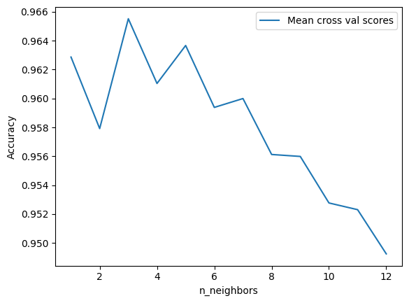
print(f"Mejor modelo = {scores.index(max(scores)) + 1}-NN con media de los cross val {max(scores)}")
Mejor modelo = 3-NN con media de los cross val 0.96552132212801
training_accuracy = []
test_accuracy = []
for i in neighbors_settings:
clf = KNeighborsClassifier(n_neighbors = i, algorithm = "kd_tree", n_jobs = -1)
clf.fit(X_train, y_train)
training_accuracy.append(clf.score(X_train, y_train))
test_accuracy.append(clf.score(X_test, y_test))
print(f"Modelo {i}-NN hecho")
Modelo 1-NN hecho
Modelo 2-NN hecho
Modelo 3-NN hecho
Modelo 4-NN hecho
Modelo 5-NN hecho
Modelo 6-NN hecho
Modelo 7-NN hecho
Modelo 8-NN hecho
Modelo 9-NN hecho
Modelo 10-NN hecho
Modelo 11-NN hecho
Modelo 12-NN hecho
plt.plot(neighbors_settings, training_accuracy, label="Training accuracy")
plt.plot(neighbors_settings, test_accuracy, label="Test accuracy")
plt.ylabel("Accuracy")
plt.xlabel("n_neighbors")
plt.legend()
<matplotlib.legend.Legend at 0x1e829a2b070>
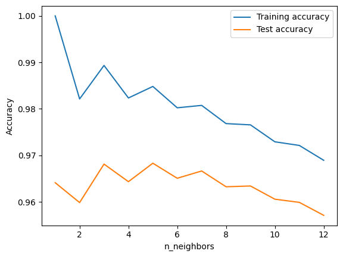
print(f"Mejor modelo = {test_accuracy.index(max(test_accuracy)) + 1}-NN con acurracy de {max(test_accuracy)}")
Mejor modelo = 5-NN con acurracy de 0.968322676695094
Dataset balanceado con SMOTE
scores = []
for i in neighbors_settings:
clf = KNeighborsClassifier(n_neighbors = i, algorithm = "kd_tree")
scores.append(np.mean(cross_val_score(clf, X_train_SM, y_train_SM, cv = 5, n_jobs = -1)))
print(f"Modelo {i}-NN hecho")
Modelo 1-NN hecho
Modelo 2-NN hecho
Modelo 3-NN hecho
Modelo 4-NN hecho
Modelo 5-NN hecho
Modelo 6-NN hecho
Modelo 7-NN hecho
Modelo 8-NN hecho
Modelo 9-NN hecho
Modelo 10-NN hecho
Modelo 11-NN hecho
Modelo 12-NN hecho
plt.plot(neighbors_settings, scores, label="Mean cross val scores")
plt.ylabel("Accuracy")
plt.xlabel("n_neighbors")
plt.legend()
<matplotlib.legend.Legend at 0x1e6811b2d30>
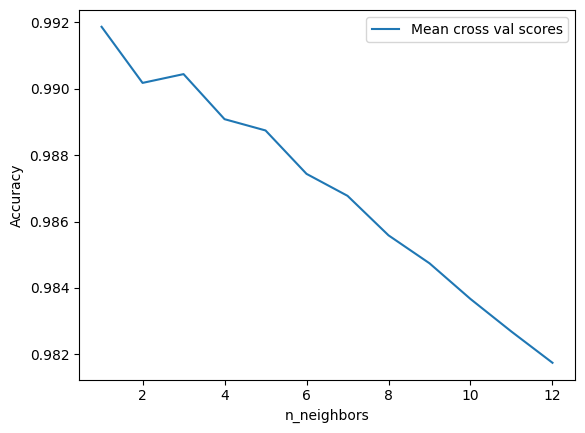
print(f"Mejor modelo = {scores.index(max(scores)) + 1}-NN con media de los cross val {max(scores)}")
Mejor modelo = 1-NN con media de los cross val 0.9918651162607335
training_accuracy = []
test_accuracy = []
for i in neighbors_settings:
clf = KNeighborsClassifier(n_neighbors = i, algorithm = "kd_tree", n_jobs = -1)
clf.fit(X_train_SM, y_train_SM)
training_accuracy.append(clf.score(X_train_SM, y_train_SM))
test_accuracy.append(clf.score(X_test, y_test))
print(f"Modelo {i}-NN hecho")
Modelo 1-NN hecho
Modelo 2-NN hecho
Modelo 3-NN hecho
Modelo 4-NN hecho
Modelo 5-NN hecho
Modelo 6-NN hecho
Modelo 7-NN hecho
Modelo 8-NN hecho
Modelo 9-NN hecho
Modelo 10-NN hecho
Modelo 11-NN hecho
Modelo 12-NN hecho
plt.plot(neighbors_settings, training_accuracy, label="Training accuracy")
plt.plot(neighbors_settings, test_accuracy, label="Test accuracy")
plt.ylabel("Accuracy")
plt.xlabel("n_neighbors")
plt.legend()
<matplotlib.legend.Legend at 0x1e688222e80>
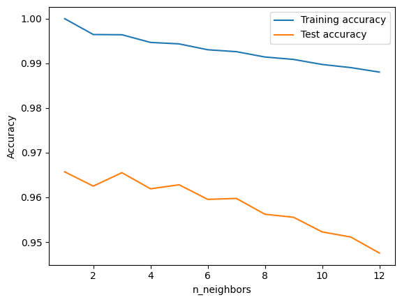
print(f"Mejor modelo = {test_accuracy.index(max(test_accuracy)) + 1}-NN con acurracy de {max(test_accuracy)}")
Mejor modelo = 1-NN con acurracy de 0.9657151708647798
Data balanceado con ADA
scores = []
for i in neighbors_settings:
clf = KNeighborsClassifier(n_neighbors = i, algorithm = "kd_tree")
scores.append(np.mean(cross_val_score(clf, X_train_ADA, y_train_ADA, cv = 5, n_jobs = -1)))
print(f"Modelo {i}-NN hecho")
Modelo 1-NN hecho
Modelo 2-NN hecho
Modelo 3-NN hecho
Modelo 4-NN hecho
Modelo 5-NN hecho
Modelo 6-NN hecho
Modelo 7-NN hecho
Modelo 8-NN hecho
Modelo 9-NN hecho
Modelo 10-NN hecho
Modelo 11-NN hecho
Modelo 12-NN hecho
plt.plot(neighbors_settings, scores, label="Mean cross val scores")
plt.ylabel("Accuracy")
plt.xlabel("n_neighbors")
plt.legend()
<matplotlib.legend.Legend at 0x1b1494d7a60>
print(f"Mejor modelo = {scores.index(max(scores)) + 1}-NN con media de los cross val {max(scores)}")
Mejor modelo = 1-NN con media de los cross val 0.9918651162607335
training_accuracy = []
test_accuracy = []
for i in neighbors_settings:
clf = KNeighborsClassifier(n_neighbors = i, algorithm = "kd_tree", n_jobs = -1)
clf.fit(X_train_ADA, y_train_ADA)
training_accuracy.append(clf.score(X_train_ADA, y_train_ADA))
test_accuracy.append(clf.score(X_test, y_test))
print(f"Modelo {i}-NN hecho")
Modelo 1-NN hecho
Modelo 2-NN hecho
Modelo 3-NN hecho
Modelo 4-NN hecho
Modelo 5-NN hecho
Modelo 6-NN hecho
Modelo 7-NN hecho
Modelo 8-NN hecho
Modelo 9-NN hecho
Modelo 10-NN hecho
Modelo 11-NN hecho
Modelo 12-NN hecho
plt.plot(neighbors_settings, training_accuracy, label="Training accuracy")
plt.plot(neighbors_settings, test_accuracy, label="Test accuracy")
plt.ylabel("Accuracy")
plt.xlabel("n_neighbors")
plt.legend()
<matplotlib.legend.Legend at 0x1b1498e6ac0>
print(f"Mejor modelo = {test_accuracy.index(max(test_accuracy)) + 1}-NN con acurracy de {max(test_accuracy)}")
Mejor modelo = 1-NN con acurracy de 0.9657151708647798
Mejor modelo
knn = KNeighborsClassifier(n_neighbors = 1, algorithm = "kd_tree", n_jobs = 1)
start = time.process_time() # Inicia el contador de CPU time
knn.fit(X_train_SM, y_train_SM)
metricas(knn)
LAUC_curvas(knn)
end = time.process_time() # Finaliza el contador de CPU time
print(f"CPU Time: {end - start} segundos")
Precisión: 96.57%
Matriz de confusión:
[[41039 1304 2 0 44 5 163]
[ 1430 54605 101 0 252 90 22]
[ 2 50 6906 46 15 102 0]
[ 0 1 32 467 0 26 0]
[ 9 61 8 0 1908 8 1]
[ 0 33 73 24 7 3352 0]
[ 64 9 0 0 0 0 3942]]
Reporte de clasificación:
precision recall f1-score support
1 0.96 0.96 0.96 42557
2 0.97 0.97 0.97 56500
3 0.97 0.97 0.97 7121
4 0.87 0.89 0.88 526
5 0.86 0.96 0.90 1995
6 0.94 0.96 0.95 3489
7 0.95 0.98 0.97 4015
accuracy 0.97 116203
macro avg 0.93 0.96 0.94 116203
weighted avg 0.97 0.97 0.97 116203
Micro-averaged One-vs-Rest ROC AUC score:
0.98
Macro-averaged One-vs-Rest ROC AUC score:
0.97
CPU Time: 47.078125 segundos
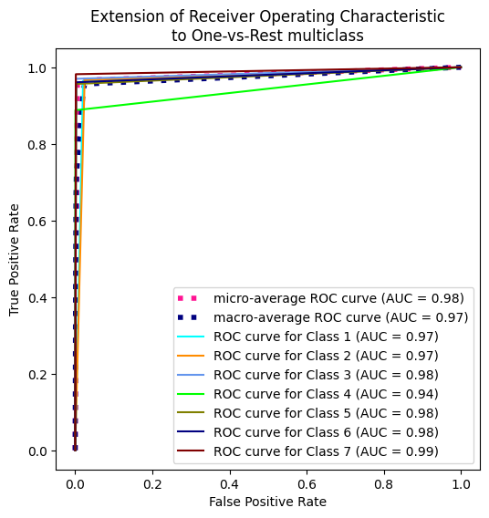
Metodos para optimizar el k-nn y CPU-time#
Por defecto los k vecinos mas cercanos se encuentran calculando la distancia del punto nuevo a predecir contra todos los puntos cargados como parte del conjunto de entrenamiento. Este proceso puede ser muy computacionalmente costoso con una alto numero de puntos de entrenamiento, por lo cual tenemos un par de algoritmos alternos para poder calcular estos k vecinos mas cercanos en menos tiempo
k-d Tree#
Un árbol KD (árbol K-Dimensional) es una estructura de datos de partición del espacio que subdivide recursivamente un espacio multidimensional en regiones asociadas a puntos de datos específicos. El objetivo principal de un árbol KD es facilitar las operaciones de búsqueda multidimensional, en particular la búsqueda del vecino más próximo. El algoritmo construye un árbol binario en el que cada nodo representa una región del espacio multidimensional, y el hiperplano asociado está alineado con uno de los ejes de coordenadas. En cada nivel del árbol, el algoritmo selecciona una dimensión para dividir los datos, creando dos nodos hijos. Este proceso continúa recursivamente hasta que se cumple una condición de terminación, como una profundidad predefinida o un número umbral de puntos por nodo. Los árboles KD se utilizan ampliamente en aplicaciones como la búsqueda del vecino más próximo, las consultas de rango y la indexación espacial, y proporcionan una complejidad temporal logarítmica para diversas operaciones de búsqueda en casos medios.
¿Cómo funciona el algoritmo de árbol KD?
Se genera un árbol binario dividiendo recursivamente los datos a lo largo de ejes. El método divide los datos en dos subconjuntos en cada nivel en función del valor medio a lo largo de una dimensión seleccionada. Como resultado de este proceso continuo, se forma un árbol en el que cada nodo representa una región del espacio multidimensional. Los árboles KD reducen el espacio de búsqueda mediante divisiones seleccionadas alineadas con los ejes, lo que permite realizar búsquedas rápidas de vecinos más próximos y consultas espaciales que posibilitan la recuperación eficaz de puntos en campos de alta dimensión.
Ball tree#
El algoritmo del árbol de bolas es un método de indexación espacial diseñado para organizar y consultar eficazmente datos multidimensionales en geometría computacional y aprendizaje automático. Formalmente, un árbol de bolas divide recursivamente el conjunto de datos encerrando subconjuntos de puntos dentro de hiperesferas. La estructura se construye como un árbol binario, en el que cada nodo que no es hoja representa una hiperesfera que contiene un subconjunto de los datos, y cada nodo hoja corresponde a un pequeño subconjunto de puntos. El proceso de partición consiste en elegir un punto «central» dentro del subconjunto y construir una hiperesfera centrada en ese punto para encerrar los datos. Esta disposición jerárquica facilita la búsqueda rápida del vecino más próximo, ya que permite eliminar rápidamente subárboles enteros durante el proceso de búsqueda. Los árboles de bolas son especialmente útiles en escenarios con datos de gran dimensión, ya que ofrecen una mayor eficiencia que los métodos de búsqueda exhaustiva en aplicaciones como la agrupación, la clasificación y las consultas al vecino más próximo.
¿Cómo funciona el algoritmo del árbol de bolas?
Específicamente concebida para la búsqueda del vecino más próximo, la técnica del árbol de Ball proporciona una estructura de datos para operaciones eficaces de búsqueda multidimensional. Utilizando un árbol binario, crea un subconjunto de puntos de datos rodeados por una hiperesfera en cada nodo. Estas hiperesferas se caracterizan por un radio y un centroide. El método divide los datos en dos subconjuntos y elige una dimensión recursivamente para crear un árbol binario entre ellos. La estructura resultante es especialmente útil en espacios de gran dimensión, en los que los cálculos de distancia convencionales pueden resultar muy costosos, ya que permite eliminar rápidamente los puntos distantes durante la búsqueda del vecino más próximo.
Regresion Logistica#
from sklearn.linear_model import LogisticRegression
---------------------------------------------------------------------------
ImportError Traceback (most recent call last)
C:\Users\ALEJAN~1\AppData\Local\Temp/ipykernel_15348/749223250.py in <module>
----> 1 from sklearn.linear_model import LogisticRegression
d:\Miniconda\envs\ml_venv\lib\site-packages\sklearn\__init__.py in <module>
71 _distributor_init,
72 )
---> 73 from .base import clone # noqa: E402
74 from .utils._show_versions import show_versions # noqa: E402
75
d:\Miniconda\envs\ml_venv\lib\site-packages\sklearn\base.py in <module>
17 from ._config import config_context, get_config
18 from .exceptions import InconsistentVersionWarning
---> 19 from .utils._estimator_html_repr import _HTMLDocumentationLinkMixin, estimator_html_repr
20 from .utils._metadata_requests import _MetadataRequester, _routing_enabled
21 from .utils._param_validation import validate_parameter_constraints
d:\Miniconda\envs\ml_venv\lib\site-packages\sklearn\utils\__init__.py in <module>
13 from . import _joblib, metadata_routing
14 from ._bunch import Bunch
---> 15 from ._chunking import gen_batches, gen_even_slices
16 from ._estimator_html_repr import estimator_html_repr
17
d:\Miniconda\envs\ml_venv\lib\site-packages\sklearn\utils\_chunking.py in <module>
9
10 from .._config import get_config
---> 11 from ._param_validation import Interval, validate_params
12
13
d:\Miniconda\envs\ml_venv\lib\site-packages\sklearn\utils\_param_validation.py in <module>
12
13 import numpy as np
---> 14 from scipy.sparse import csr_matrix, issparse
15
16 from .._config import config_context, get_config
d:\Miniconda\envs\ml_venv\lib\site-packages\scipy\sparse\__init__.py in <module>
306
307 # For backward compatibility with v0.19.
--> 308 from . import csgraph
309
310 # Deprecated namespaces, to be removed in v2.0.0
d:\Miniconda\envs\ml_venv\lib\site-packages\scipy\sparse\csgraph\__init__.py in <module>
183 'NegativeCycleError']
184
--> 185 from ._laplacian import laplacian
186 from ._shortest_path import (
187 shortest_path, floyd_warshall, dijkstra, bellman_ford, johnson,
d:\Miniconda\envs\ml_venv\lib\site-packages\scipy\sparse\csgraph\_laplacian.py in <module>
5 import numpy as np
6 from scipy.sparse import issparse
----> 7 from scipy.sparse.linalg import LinearOperator
8 from scipy.sparse._sputils import convert_pydata_sparse_to_scipy, is_pydata_spmatrix
9
d:\Miniconda\envs\ml_venv\lib\site-packages\scipy\sparse\linalg\__init__.py in <module>
138
139 # Deprecated namespaces, to be removed in v2.0.0
--> 140 from . import isolve, dsolve, interface, eigen, matfuncs
141
142 __all__ = [s for s in dir() if not s.startswith('_')]
d:\Miniconda\envs\ml_venv\lib\site-packages\scipy\sparse\linalg\isolve\__init__.py in <module>
2
3 #from info import __doc__
----> 4 from .iterative import *
5 from .minres import minres
6 from .lgmres import lgmres
d:\Miniconda\envs\ml_venv\lib\site-packages\scipy\sparse\linalg\isolve\iterative.py in <module>
6 import numpy as np
7
----> 8 from . import _iterative
9
10 from scipy.sparse.linalg.interface import LinearOperator
ImportError: DLL load failed while importing _iterative: No se puede encontrar el módulo especificado.
X_train_sc = scaler.fit_transform(X_train, y_train)
# Modelo con regularización L1
model_l1 = LogisticRegression(
penalty='l1', # Tipo de regularización (L1)
C=0.1, # Fuerza de regularización (inverso: C=0.1 es alta regularización)
solver='saga', # Algoritmo compatible con L1 (otros: 'liblinear')
max_iter=1000, # Aumentar si no converge
random_state=42,
verbose=1, # Ver progreso
n_jobs = -1,
multi_class= "ovr"
)
start = time.process_time()
model_l1.fit(X_train_sc, y_train)
end = time.process_time()
print(f"CPU Time: {end - start} segundos")
# Modelo con regularización L2 (configuración por defecto)
model_l2 = LogisticRegression(
penalty='l2', # Regularización L2 (configuración por defecto)
C=1.0, # Valor por defecto
solver='lbfgs', # Algoritmo para L2 ('lbfgs', 'newton-cg', 'sag')
max_iter=1000,
n_jobs = -1,
multi_class="ovr"
)
start = time.process_time()
model_l2.fit(X_train_sc, y_train)
end = time.process_time()
print(f"CPU Time: {end - start} segundos")
[Parallel(n_jobs=-1)]: Using backend ThreadingBackend with 8 concurrent workers.
convergence after 379 epochs took 508 seconds
convergence after 960 epochs took 1236 seconds
max_iter reached after 1241 seconds
max_iter reached after 1279 seconds
max_iter reached after 1281 seconds
max_iter reached after 1288 seconds
max_iter reached after 1329 seconds
CPU Time: 6367.296875 segundos
[Parallel(n_jobs=-1)]: Done 7 out of 7 | elapsed: 22.1min finished
CPU Time: 0.4375 segundos
metricas(model_l1, True)
AUC_curvas(model_l1, True)
Precisión: 71.52%
Matriz de confusión:
[[29373 12319 35 0 2 0 828]
[ 9938 45055 1269 2 62 103 71]
[ 0 742 6177 57 0 145 0]
[ 0 0 382 98 0 46 0]
[ 45 1717 206 0 26 1 0]
[ 0 1254 1982 17 2 234 0]
[ 1822 31 17 0 0 0 2145]]
Reporte de clasificación:
precision recall f1-score support
1 0.71 0.69 0.70 42557
2 0.74 0.80 0.77 56500
3 0.61 0.87 0.72 7121
4 0.56 0.19 0.28 526
5 0.28 0.01 0.02 1995
6 0.44 0.07 0.12 3489
7 0.70 0.53 0.61 4015
accuracy 0.72 116203
macro avg 0.58 0.45 0.46 116203
weighted avg 0.70 0.72 0.70 116203
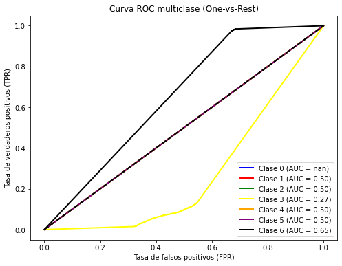
AUC promedio (macro): 0.47
metricas(model_l2, True)
AUC_curvas(model_l2, True)
Precisión: 71.55%
Matriz de confusión:
[[29382 12327 35 0 2 0 811]
[ 9937 45055 1270 2 62 107 67]
[ 0 740 6146 73 0 162 0]
[ 0 0 330 152 0 44 0]
[ 45 1718 206 0 25 1 0]
[ 0 1252 1964 31 4 238 0]
[ 1821 31 17 0 0 0 2146]]
Reporte de clasificación:
precision recall f1-score support
1 0.71 0.69 0.70 42557
2 0.74 0.80 0.77 56500
3 0.62 0.86 0.72 7121
4 0.59 0.29 0.39 526
5 0.27 0.01 0.02 1995
6 0.43 0.07 0.12 3489
7 0.71 0.53 0.61 4015
accuracy 0.72 116203
macro avg 0.58 0.47 0.48 116203
weighted avg 0.70 0.72 0.70 116203
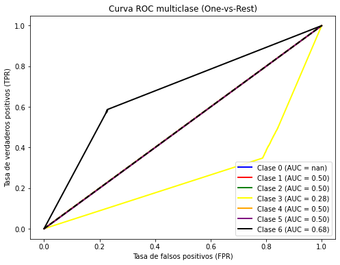
AUC promedio (macro): 0.47
print("Coeficientes L1:", model_l1.coef_)
print("Coeficientes L2:", model_l2.coef_)
# Contar coeficientes no nulos (L1 tiende a eliminar características)
print("Características no nulas (L1):", np.sum(model_l1.coef_ != 0))
print("Características no nulas (L2):", np.sum(model_l2.coef_ != 0))
Coeficientes L1: [[ 1.96701280e+00 -4.07914441e-02 -1.13931589e-01 -2.98984166e-01
-9.31559168e-02 -1.48958937e-01 -5.11565740e-01 2.91434613e-01
-1.27601363e-02 3.34722564e-01 0.00000000e+00 -4.13525245e-01
-2.75137476e-01 -7.88759246e-02 0.00000000e+00 -1.23808043e-01
-6.31543326e-02 2.63492003e-03 5.36810259e-02 3.96220935e-02
3.18117835e-03 -1.33344736e-01 -1.46437781e-02 -4.60995447e-02
0.00000000e+00 3.50128268e-02 3.05329157e-02 -8.71496838e-03
5.59115587e-02 1.12488749e-01 1.30363900e-01 2.70391511e-01
2.50633098e-01 1.15389339e-01 -2.26345386e-02 -6.41514896e-03
3.97429342e-02 -1.87691467e-02 -6.17643697e-02 -6.74538516e-02
1.15054864e-01 2.48709939e-02 1.36214659e-01 -8.13320058e-02
-9.09263403e-02 -2.99139034e-02 -2.17180650e-01 -1.57957083e-01
-1.52532094e-01 -1.88770425e-01 -8.10714479e-02 1.83186707e-02
-7.11673899e-01]
[-1.54724016e+00 -3.59526531e-02 1.15343013e-01 3.26397032e-01
2.80059954e-02 1.29458889e-01 4.99833458e-01 -1.15350452e-01
1.86040940e-02 2.20010314e-01 -4.86641987e-01 -4.45429336e-01
-2.29116891e-01 -4.20191148e-01 -3.43872439e-01 -3.09571173e-02
7.05732629e-02 8.75822347e-03 -8.12048714e-04 -1.47251485e-01
1.45786468e-02 3.09053329e-01 1.21666380e-01 -2.80301679e-01
-8.06429109e-03 -1.12028681e-02 -1.54801581e-01 -9.84979256e-03
-6.76079171e-03 -1.90764571e-02 -1.00788144e-01 -1.08588077e-01
-3.44906061e-02 8.99177904e-02 4.73615833e-02 7.66910954e-02
7.65344773e-03 7.33252155e-02 2.53171767e-01 1.23354650e-01
1.21495089e-01 2.63266065e-01 1.75622888e-01 1.05413723e-01
-1.65656912e-01 5.27527148e-03 -9.46063701e-02 -2.29322953e-01
-2.93648734e-01 -1.68400245e-01 2.07369333e-01 1.37935232e-01
-1.04420542e+00]
[-1.55438168e+00 1.68489500e-01 2.34794817e-01 4.09389262e-01
1.14374855e-01 -1.48305116e-01 2.37437787e-01 -2.18296789e-01
-3.69125213e-01 -3.79451523e-01 2.13160677e-01 5.34955945e-01
2.83641412e-01 6.95174803e-01 1.31488149e-01 4.28237901e-01
0.00000000e+00 0.00000000e+00 -7.36448885e-02 7.16626245e-01
4.25890485e-01 -1.99373286e-01 -9.19153042e-02 5.01691085e-02
-4.27108358e-03 1.74560318e-01 1.87427712e-01 -6.86179368e-02
0.00000000e+00 -1.09675234e-01 0.00000000e+00 -1.89769114e-02
-1.52701668e-01 -2.23728559e-01 0.00000000e+00 -9.37682441e-02
-2.42887496e-02 -1.10736161e-01 -1.54877326e-01 -2.12814385e-01
-2.89533590e-01 1.61904935e-01 -4.63473356e-01 -9.58235781e-02
0.00000000e+00 0.00000000e+00 0.00000000e+00 3.36684424e-02
0.00000000e+00 2.13748984e-02 1.57990917e-03 2.78154586e-01
5.17569171e-02]
[-8.16215596e-01 -1.00775385e-01 -3.39155738e-01 -6.27589559e-01
1.89364268e-01 6.70366956e-01 6.69694397e-01 -7.72991104e-01
3.08756182e-01 -3.75460425e-01 -7.11579767e-02 -1.19798567e-01
9.58081562e-02 -1.63931794e-02 -5.46567351e-02 -8.19621091e-02
0.00000000e+00 0.00000000e+00 0.00000000e+00 -2.60736835e-01
-5.57186081e-02 -9.65411104e-02 1.20665194e-02 4.24833283e-02
-6.33062050e-03 3.31244901e-02 1.39916452e-01 -2.33713872e-02
-9.74563141e-03 -6.20293097e-02 0.00000000e+00 1.15821011e-02
0.00000000e+00 6.89818397e-02 0.00000000e+00 0.00000000e+00
0.00000000e+00 0.00000000e+00 -2.81630811e-02 -5.37698513e-02
7.21270758e-02 1.06318386e-01 1.22656752e-01 0.00000000e+00
0.00000000e+00 0.00000000e+00 0.00000000e+00 3.85984564e-02
9.06158082e-02 9.21796831e-02 5.58102160e-02 -1.45740093e-01
1.21350622e+00]
[-8.79046609e-01 2.47204015e-01 -2.54107203e-02 -1.89146389e-01
3.20915856e-01 -7.30980726e-01 2.41807825e-01 -5.70406668e-01
-1.58645441e-01 2.14910244e-01 -1.23380835e-01 -1.85391407e-03
-3.95753013e-01 7.75134393e-03 -5.14566053e-02 -9.25960187e-02
0.00000000e+00 0.00000000e+00 -1.67660239e-01 -1.31328999e-01
1.31065085e-01 -6.62819446e-01 2.71670169e-01 -1.25347540e-01
0.00000000e+00 4.95546374e-03 1.90090724e-01 1.00271577e-01
1.73397564e-01 -4.01020443e-02 -8.12684121e-02 -5.28898182e-01
3.12128338e-01 -9.34415542e-02 0.00000000e+00 1.27160540e-01
-1.06017962e-01 -7.53621289e-03 3.64547373e-01 4.88313248e-01
9.46830884e-02 9.75938014e-02 2.37670096e-02 1.68378993e-03
-6.68529157e-02 -1.78852064e-03 0.00000000e+00 -1.95891609e-01
-2.78091420e-01 -1.48252636e-01 -4.97364443e-01 4.92250870e-01
-1.17262478e+00]
[-1.12102137e+00 1.33782578e-02 -6.08448564e-01 -3.41077817e-01
-3.92699660e-02 4.27565131e-02 -5.93672918e-01 4.51739411e-01
3.06274822e-01 -1.09046819e+00 1.69807177e-01 2.36923114e-01
8.51327856e-02 1.95289411e-01 1.33721456e-01 2.57656193e-01
0.00000000e+00 0.00000000e+00 -2.12374245e-02 5.80009254e-01
9.74419719e-02 -1.64259422e-01 3.27525679e-01 8.55702827e-02
1.36632416e-02 1.76292557e-01 1.29262518e-01 -7.80647268e-02
-1.19442086e-01 1.84072007e-01 -8.48515697e-02 -3.27644188e-01
-3.73723274e-01 2.28512532e-02 0.00000000e+00 -1.84365776e-01
-1.25048393e-02 -1.02333945e-01 -5.73712247e-02 0.00000000e+00
-2.19028385e-01 -3.80399221e-02 2.09580277e-01 5.47416838e-02
-2.49136434e-02 0.00000000e+00 0.00000000e+00 -6.05316234e-02
-8.01448401e-02 0.00000000e+00 -2.08905487e-04 9.51868013e-01
2.69761809e-01]
[ 4.09728251e+00 5.78622374e-02 -2.30168356e-01 -4.43616281e-01
-6.93730593e-02 -2.05755107e-01 2.54705380e-03 -4.43006378e-01
4.68553922e-01 -7.85990773e-01 1.16835625e-01 8.14412753e-02
9.23605386e-02 6.00354624e-01 5.85391534e-02 1.27744054e-01
0.00000000e+00 0.00000000e+00 5.35045996e-02 1.12572296e-01
-3.46298607e-03 5.02779988e-02 -3.58421062e-01 2.92812283e-03
0.00000000e+00 -2.31744322e-02 0.00000000e+00 0.00000000e+00
-1.17876644e-01 -1.41563425e-01 -5.49144099e-02 -3.59385622e-01
-1.88605513e-01 -1.83299901e-01 -1.02892076e-01 -1.20812098e-01
-2.46402132e-02 0.00000000e+00 4.86059950e-01 3.53026771e-01
-3.21842730e-01 -4.51155117e-01 -3.27952367e-01 2.71431814e-02
8.87683272e-02 2.41877160e-02 2.20847790e-01 2.98632200e-01
3.24525532e-01 1.45773642e-01 -3.27111458e-01 5.85115426e-01
7.00518686e-01]]
Coeficientes L2: [[ 1.96739491e+00 -4.11209118e-02 -1.13978432e-01 -2.99113635e-01
-9.32146155e-02 -1.49380879e-01 -5.12090178e-01 2.92280623e-01
-1.29283801e-02 5.06755369e-01 -1.16056221e-01 -7.41584963e-01
-5.17286322e-01 -6.56247648e-02 -9.73663516e-02 -3.24446275e-01
-1.21451010e-01 4.56486859e-03 5.83792895e-02 6.61743360e-02
1.85193554e-02 -1.10988519e-01 2.73666161e-03 -1.22618152e-01
-2.77142636e-03 4.23172455e-02 3.88631217e-02 -3.53674605e-03
6.44677628e-02 1.25435291e-01 1.34782870e-01 2.94427096e-01
2.81438181e-01 1.34753507e-01 -1.97677425e-02 2.24499694e-04
4.43098415e-02 -1.51161188e-02 -2.12192350e-02 -4.49573975e-02
1.36368728e-01 5.46171343e-02 1.64034957e-01 -7.63187563e-02
-8.51368496e-02 -2.86024460e-02 -3.64990614e-01 -1.41493255e-01
-1.36995001e-01 -1.76436513e-01 -5.20582141e-03 1.88777347e-01
-1.40990659e+00]
[-1.54915368e+00 -3.61423168e-02 1.15925314e-01 3.26705698e-01
2.81009193e-02 1.29838977e-01 5.00892305e-01 -1.15857338e-01
1.85736925e-02 2.45967934e-01 -7.59168799e-01 -4.41550992e-01
-2.26056722e-01 -4.15112422e-01 -5.40166292e-01 -2.73310216e-02
1.15096057e-01 9.56729659e-03 6.73208215e-04 -1.38784105e-01
2.02071381e-02 3.17890205e-01 1.28305023e-01 -4.19170215e-01
-2.02333084e-02 -8.62526031e-03 -1.52064201e-01 -7.90656482e-03
-3.55429469e-03 -1.42575433e-02 -1.00037095e-01 -9.93363953e-02
-2.26001949e-02 9.75317723e-02 4.85808938e-02 7.94233348e-02
9.43044214e-03 7.52060492e-02 2.69147886e-01 1.32178028e-01
1.29815959e-01 2.74877759e-01 1.86295820e-01 1.07703105e-01
-1.66078579e-01 5.94879480e-03 -1.42447548e-01 -2.23132661e-01
-2.88231184e-01 -1.64023796e-01 2.19335997e-01 1.63934750e-01
-1.03155958e+00]
[-1.56171990e+00 1.72911431e-01 2.39089780e-01 4.14681241e-01
1.15472258e-01 -1.70527811e-01 2.43324553e-01 -2.25028182e-01
-3.77605100e-01 -1.18743708e+00 3.49952685e-01 7.50177235e-01
4.55926133e-01 9.69951031e-01 2.31307454e-01 6.30731598e-01
-2.48562730e-03 -2.89863589e-03 -8.39416568e-02 1.15682479e+00
7.01306938e-01 -2.30525703e-01 2.18675133e-01 1.11449283e-01
-1.14335872e-02 3.19553261e-01 3.33686773e-01 -8.61612500e-02
-1.65370424e-01 1.04704132e-02 -1.00794116e-01 -4.21108980e-01
-6.95432201e-01 -5.59775053e-01 -1.95536454e-02 -2.16409781e-01
-1.27228364e-01 -1.69897118e-01 -2.88533259e-01 -2.43017272e-01
-6.41816055e-01 7.12808250e-01 -3.50487940e-01 -1.84764038e-01
-7.88500118e-02 -3.79861688e-02 -2.26898158e-02 -2.70454227e-01
-2.93771860e-01 -1.50654897e-01 -3.17704207e-01 1.10852070e+00
4.55045142e-01]
[-1.85911241e+00 -1.44956028e-01 -4.67264418e-01 -1.18447232e+00
5.95212333e-01 2.58337341e+00 9.55205212e-01 -1.08262221e+00
1.96601853e+00 -1.41595100e+00 8.51973043e-02 1.03548768e-01
2.65891609e-01 3.08046510e-01 6.66648810e-02 1.60232007e-01
-9.07067408e-03 -2.03088876e-02 6.49930827e-05 3.19617756e-01
3.38463123e-01 -1.89107889e-01 -2.62905308e-02 1.12262739e-01
-1.29571829e-02 2.01613321e-01 2.96285537e-01 -7.03418045e-03
-4.48749691e-02 -1.20975817e-01 -5.02154695e-03 -3.13319481e-02
-5.08288476e-02 -6.52010670e-02 -3.00010596e-03 -1.16771642e-02
-7.55487073e-03 -7.58291956e-03 -2.24395815e-01 -1.57224853e-01
-3.14234657e-02 -4.47614412e-02 -4.73200301e-02 -7.75988042e-03
-8.37315240e-03 -2.74380145e-03 -2.81178848e-03 -2.24607567e-02
-2.45814052e-02 -2.06854110e-02 -2.27625345e-02 -1.44754108e-01
3.19664679e+00]
[-8.83607108e-01 2.56893695e-01 -2.88442147e-02 -1.95503298e-01
3.27410338e-01 -7.41717326e-01 2.47698237e-01 -5.80499557e-01
-1.62844197e-01 5.49621735e-01 -2.23241723e-01 8.12981541e-02
-6.47104640e-01 1.14923184e-01 -1.38076643e-01 -2.22640478e-01
-4.86284753e-02 -6.93224025e-02 -3.05063408e-01 4.04388071e-02
2.39619395e-01 -1.24056208e+00 3.99026570e-01 -2.35942016e-01
-5.41764533e-03 5.63513838e-02 2.47952637e-01 1.40394463e-01
2.36506720e-01 4.59954622e-02 -2.04480746e-01 -1.13648981e+00
5.32543378e-01 4.03383926e-02 -5.51599891e-02 1.78024267e-01
-2.41036677e-01 2.13471841e-02 6.40571913e-01 6.40540659e-01
2.50674226e-01 3.15119716e-01 2.26334726e-01 4.28781118e-02
-2.46293547e-01 -6.34548554e-02 -8.30425797e-02 -6.47526176e-01
-6.92972334e-01 -4.94596508e-01 -1.08159401e+00 7.95554837e-01
-1.75558156e+00]
[-1.13232924e+00 1.54063923e-02 -6.22577397e-01 -3.55204060e-01
-3.53001653e-02 5.69409942e-02 -6.09767017e-01 4.62091093e-01
3.73086819e-01 -2.07086173e+00 2.42792277e-01 3.50300541e-01
1.77703903e-01 3.40077524e-01 1.86602396e-01 3.63210541e-01
-1.14656293e-02 -1.67283590e-02 -4.01383733e-02 8.08089797e-01
2.37319204e-01 -2.03939924e-01 4.97083048e-01 1.17732893e-01
5.23064358e-02 2.58453899e-01 2.02877510e-01 -7.17564568e-02
-3.42312129e-01 3.11281489e-01 -2.09055325e-01 -9.10138160e-01
-1.72279180e-01 2.05433805e-01 -2.03467339e-02 -3.93941182e-01
-1.48540632e-01 -2.32494566e-01 -3.55855953e-01 -1.64531874e-01
-4.09418525e-02 2.29912352e-01 4.72029557e-01 1.08787589e-01
-1.92284974e-01 -3.82351642e-02 -5.15343195e-02 -4.98255539e-01
-4.93476279e-01 -3.21856891e-01 -4.87485563e-01 1.92442012e+00
7.51296744e-01]
[ 4.34797138e+00 6.32338162e-02 -2.43586845e-01 -4.58229664e-01
-8.31076548e-02 -2.22901100e-01 -1.90232952e-03 -4.56459455e-01
4.83244007e-01 -6.48621170e-01 5.67547744e-02 -1.10201852e-01
-3.56616478e-02 7.57507484e-01 2.94023243e-02 7.44047762e-03
-3.26007613e-02 -4.87395618e-02 2.25975530e-02 -4.57824680e-01
-3.98454471e-01 -5.35978816e-01 -3.58058883e-01 2.37247696e-02
2.47760173e-03 -2.46895632e-01 -2.23519056e-01 -1.60828164e-01
-9.40235514e-02 -5.15603268e-01 -3.21569975e-02 -2.10090501e-01
1.11684448e-02 -5.57998972e-02 -2.17496501e-01 -3.22502952e-01
5.53920221e-03 -8.12416143e-02 7.89498497e-01 5.26739984e-01
-1.88561840e-01 -2.76359954e-01 -1.57154800e-01 6.48993372e-02
1.23882519e-01 3.35654362e-02 3.17482630e-01 4.01711270e-01
4.25554196e-01 2.17389978e-01 -2.74390827e-01 7.53431681e-01
3.95690939e-02]]
Características no nulas (L1): 328
Características no nulas (L2): 371
# Coeficientes L1 vs L2
plt.figure(figsize=(10, 6))
plt.plot(model_l1.coef_.flatten(), 'o', label='L1 (Lasso)')
plt.plot(model_l2.coef_.flatten(), 'o', label='L2 (Ridge)')
plt.axhline(0, color='black', linestyle='--')
plt.xlabel("Índice de la Característica")
plt.ylabel("Valor del Coeficiente")
plt.legend()
plt.title("Efecto de L1 vs L2 en los Coeficientes")
plt.show()
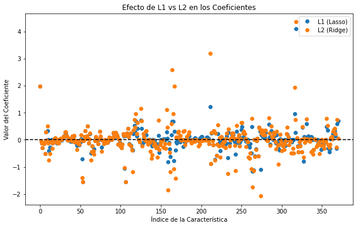
param_grid = {
'C': np.logspace(-3, 3, 7), # Valores de C: 0.001, 0.01, ..., 1000
}
# Búsqueda en grid
grid_search = GridSearchCV(
LogisticRegression(max_iter=300, solver = 'saga', penalty = 'l1', multi_class="ovr"),
param_grid,
cv=5,
scoring='accuracy',
n_jobs = -1,
verbose = 1
)
start = time.process_time() # Inicia el contador de CPU time
grid_search.fit(X_train_sc, y_train)
end = time.process_time() # Finaliza el contador de CPU time
# Mejores parámetros
print("Mejores parámetros:", grid_search.best_params_)
best_model_l1 = grid_search.best_estimator_
print("Accuracy on training set: {:.3f}".format(best_model_l1.score(X_train_sc, y_train)))
metricas(best_model_l1, scaled = True)
LAUC_curvas(best_model_l1, scaled = True)
Fitting 5 folds for each of 7 candidates, totalling 35 fits
---------------------------------------------------------------------------
KeyboardInterrupt Traceback (most recent call last)
C:\Users\ALEJAN~1\AppData\Local\Temp/ipykernel_5184/1038029192.py in <module>
13 )
14 start = time.process_time() # Inicia el contador de CPU time
---> 15 grid_search.fit(X_train_sc, y_train)
16 end = time.process_time() # Finaliza el contador de CPU time
17 # Mejores parámetros
d:\Miniconda\envs\ml_venv\lib\site-packages\sklearn\model_selection\_search.py in fit(self, X, y, groups, **fit_params)
889 return results
890
--> 891 self._run_search(evaluate_candidates)
892
893 # multimetric is determined here because in the case of a callable
d:\Miniconda\envs\ml_venv\lib\site-packages\sklearn\model_selection\_search.py in _run_search(self, evaluate_candidates)
1390 def _run_search(self, evaluate_candidates):
1391 """Search all candidates in param_grid"""
-> 1392 evaluate_candidates(ParameterGrid(self.param_grid))
1393
1394
d:\Miniconda\envs\ml_venv\lib\site-packages\sklearn\model_selection\_search.py in evaluate_candidates(candidate_params, cv, more_results)
836 )
837
--> 838 out = parallel(
839 delayed(_fit_and_score)(
840 clone(base_estimator),
d:\Miniconda\envs\ml_venv\lib\site-packages\joblib\parallel.py in __call__(self, iterable)
2005 next(output)
2006
-> 2007 return output if self.return_generator else list(output)
2008
2009 def __repr__(self):
d:\Miniconda\envs\ml_venv\lib\site-packages\joblib\parallel.py in _get_outputs(self, iterator, pre_dispatch)
1648
1649 with self._backend.retrieval_context():
-> 1650 yield from self._retrieve()
1651
1652 except GeneratorExit:
d:\Miniconda\envs\ml_venv\lib\site-packages\joblib\parallel.py in _retrieve(self)
1760 (self._jobs[0].get_status(
1761 timeout=self.timeout) == TASK_PENDING)):
-> 1762 time.sleep(0.01)
1763 continue
1764
KeyboardInterrupt:
param_grid = {
'C': np.logspace(-3, 3, 7), # Valores de C: 0.001, 0.01, ..., 1000
}
# Búsqueda en grid
grid_search = GridSearchCV(
LogisticRegression(max_iter=1000, solver = 'liblinear', penalty = 'l2'),
param_grid,
cv=5,
scoring='accuracy',
n_jobs = -1
)
start = time.process_time() # Inicia el contador de CPU time
grid_search.fit(X_train_sc, y_train)
end = time.process_time() # Finaliza el contador de CPU time
# Mejores parámetros
print("Mejores parámetros:", grid_search.best_params_)
best_model = grid_search.best_estimator_
print("Accuracy on training set: {:.3f}".format(best_model.score(X_train_sc, y_train)))
metricas(best_model, scaled = True)
AUC_curvas(best_model, scaled = True)
Mejores parámetros: {'C': 100.0}
Accuracy on training set: 0.715
Precisión: 71.55%
Matriz de confusión:
[[29380 12327 35 0 2 0 813]
[ 9938 45055 1270 2 60 107 68]
[ 0 740 6149 71 0 161 0]
[ 0 0 329 153 0 44 0]
[ 45 1718 206 0 25 1 0]
[ 0 1252 1964 31 4 238 0]
[ 1822 31 17 0 0 0 2145]]
Reporte de clasificación:
precision recall f1-score support
1 0.71 0.69 0.70 42557
2 0.74 0.80 0.77 56500
3 0.62 0.86 0.72 7121
4 0.60 0.29 0.39 526
5 0.27 0.01 0.02 1995
6 0.43 0.07 0.12 3489
7 0.71 0.53 0.61 4015
accuracy 0.72 116203
macro avg 0.58 0.47 0.48 116203
weighted avg 0.70 0.72 0.70 116203
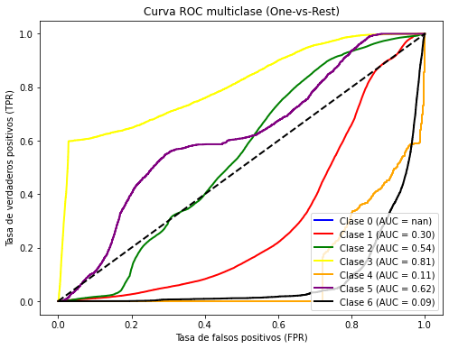
AUC promedio (macro): 0.93
best_model_l1 = LogisticRegression(max_iter=1000, solver = 'saga', penalty = 'l1', C = 10, multiclass ="ovr")
start = time.process_time() # Inicia el contador de CPU time
best_model_l1.fit(X_train_sc, y_train)
end = time.process_time() # Finaliza el contador de CPU time
print(end - start)
metricas(best_model_l1)
LAUC_curvas(best_model_l1, scaled = True)
---------------------------------------------------------------------------
NameError Traceback (most recent call last)
C:\Users\ALEJAN~1\AppData\Local\Temp/ipykernel_13172/110160045.py in <module>
----> 1 best_model_l1 = LogisticRegression(max_iter=1000, solver = 'saga', penalty = 'l1', C = 10, multiclass ="ovr")
2 start = time.process_time() # Inicia el contador de CPU time
3 best_model_l1.fit(X_train_sc, y_train)
4 end = time.process_time() # Finaliza el contador de CPU time
5 print(end - start)
NameError: name 'LogisticRegression' is not defined
best_model_l2 = LogisticRegression(max_iter=1000, solver = 'liblinear', penalty = 'l2', C = 100)
best_model_l2.fit(X_train_sc, y_train)
LAUC_curvas(best_model_l2, scaled = True)
param_grid = {
'C': np.logspace(-3, 3, 7), # Valores de C: 0.001, 0.01, ..., 1000
}
# Búsqueda en grid
grid_search = GridSearchCV(
LogisticRegression(max_iter=1000, solver = 'liblinear', penalty = 'l2', class_weight = "balanced"),
param_grid,
cv=5,
scoring='accuracy',
n_jobs = -1
)
start = time.process_time() # Inicia el contador de CPU time
grid_search.fit(X_train_sc, y_train)
end = time.process_time() # Finaliza el contador de CPU time
# Mejores parámetros
print("Mejores parámetros:", grid_search.best_params_)
best_model_l2_B = grid_search.best_estimator_
print("Accuracy on training set: {:.3f}".format(best_model_l2_B.score(X_train_sc, y_train)))
metricas(best_model_l2_B, scaled = True)
LAUC_curvas(best_model_l2_B, scaled = True)
Mejores parámetros: {'C': 10.0}
Accuracy on training set: 0.684
Precisión: 68.30%
Matriz de confusión:
[[28816 9922 38 0 509 273 2999]
[11314 39750 1482 18 2147 1560 229]
[ 0 307 4934 503 86 1291 0]
[ 0 0 147 328 0 51 0]
[ 31 987 189 0 713 75 0]
[ 0 348 1237 195 136 1573 0]
[ 723 17 17 0 0 0 3258]]
Reporte de clasificación:
precision recall f1-score support
1 0.70 0.68 0.69 42557
2 0.77 0.70 0.74 56500
3 0.61 0.69 0.65 7121
4 0.31 0.62 0.42 526
5 0.20 0.36 0.26 1995
6 0.33 0.45 0.38 3489
7 0.50 0.81 0.62 4015
accuracy 0.68 116203
macro avg 0.49 0.62 0.54 116203
weighted avg 0.70 0.68 0.69 116203
Micro-averaged One-vs-Rest ROC AUC score:
0.95
Macro-averaged One-vs-Rest ROC AUC score:
0.93
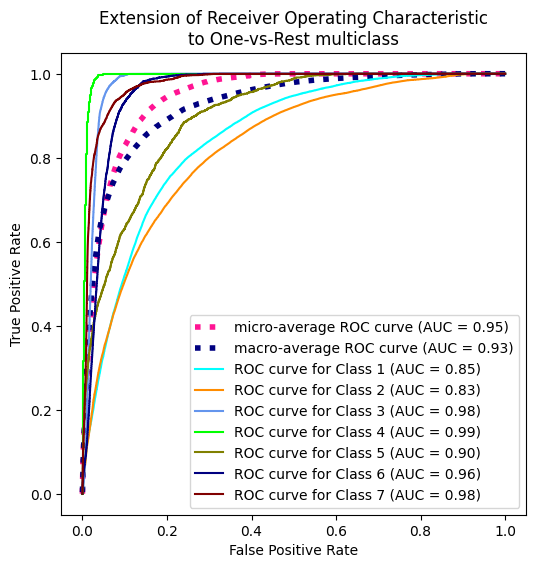
X_train_SM_sc = scaler.fit_transform(X_train_SM, y_train_SM)
model_l2_SM = LogisticRegression(max_iter=1000, solver = 'liblinear', penalty = 'l2', C = 100, n_jobs = -1)
model_l2_SM.fit(X_train_SM_sc, y_train_SM)
metricas(model_l2_SM , scaled = True)
LAUC_curvas(model_l2_SM, scaled = True)
Precisión: 28.17%
Matriz de confusión:
[[14902 1203 515 0 2769 9571 13597]
[10649 9133 3838 609 11495 17100 3676]
[ 0 265 2321 4263 3 269 0]
[ 0 0 0 526 0 0 0]
[ 67 145 367 0 836 580 0]
[ 0 161 293 1928 0 1107 0]
[ 80 0 17 0 2 5 3911]]
Reporte de clasificación:
precision recall f1-score support
1 0.58 0.35 0.44 42557
2 0.84 0.16 0.27 56500
3 0.32 0.33 0.32 7121
4 0.07 1.00 0.13 526
5 0.06 0.42 0.10 1995
6 0.04 0.32 0.07 3489
7 0.18 0.97 0.31 4015
accuracy 0.28 116203
macro avg 0.30 0.51 0.23 116203
weighted avg 0.65 0.28 0.33 116203
Micro-averaged One-vs-Rest ROC AUC score:
0.79
Macro-averaged One-vs-Rest ROC AUC score:
0.83
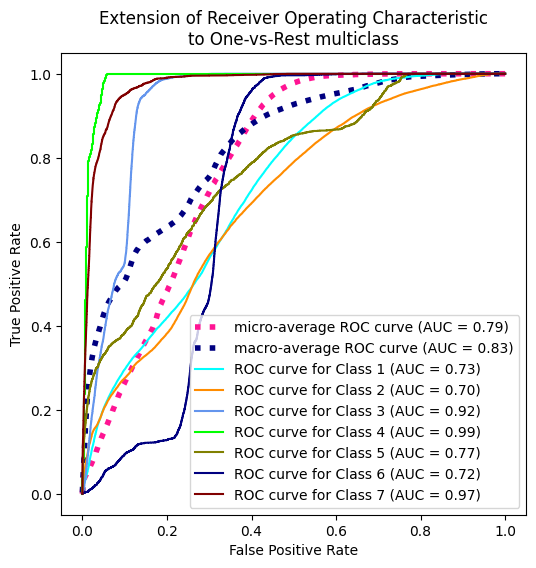
print(end - start)
182.59375
Bayesiano#
from sklearn.naive_bayes import GaussianNB, BernoulliNB
X_train_sc = scaler.fit_transform(X_train, y_train)
NaiveB = BernoulliNB(alpha = 50000)
start = time.process_time() # Inicia el contador de CPU time
NaiveB.fit(X_train_sc, y_train)
end = time.process_time() # Finaliza el contador de CPU time
print(f"CPU Time: {end - start} segundos")
metricas(NaiveB)
AUC_curvas(NaiveB)
CPU Time: 0.640625 segundos
Precisión: 48.62%
Matriz de confusión:
[[ 0 42557 0 0 0 0 0]
[ 0 56500 0 0 0 0 0]
[ 0 7121 0 0 0 0 0]
[ 0 526 0 0 0 0 0]
[ 0 1995 0 0 0 0 0]
[ 0 3489 0 0 0 0 0]
[ 0 4015 0 0 0 0 0]]
Reporte de clasificación:
precision recall f1-score support
1 0.00 0.00 0.00 42557
2 0.49 1.00 0.65 56500
3 0.00 0.00 0.00 7121
4 0.00 0.00 0.00 526
5 0.00 0.00 0.00 1995
6 0.00 0.00 0.00 3489
7 0.00 0.00 0.00 4015
accuracy 0.49 116203
macro avg 0.07 0.14 0.09 116203
weighted avg 0.24 0.49 0.32 116203
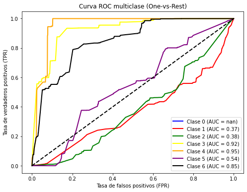
AUC promedio (macro): 0.77
X_train_SM_sc = scaler.fit_transform(X_train_SM, y_train_SM)
NaiveB = BernoulliNB()
start = time.process_time() # Inicia el contador de CPU time
NaiveB.fit(X_train_SM_sc, y_train_SM)
end = time.process_time() # Finaliza el contador de CPU time
print(f"CPU Time: {end - start} segundos")
print("Accuracy on training set: {:.3f}".format(NaiveB.score(X_train, y_train)))
metricas(NaiveB, True)
LAUC_curvas(NaiveB, True)
CPU Time: 2.328125 segundos
Accuracy on training set: 0.475
Precisión: 44.08%
Matriz de confusión:
[[19606 8488 37 0 7478 1016 5932]
[ 9996 21201 1415 168 16539 5287 1894]
[ 0 10 3165 1559 232 2155 0]
[ 0 0 52 435 0 39 0]
[ 5 184 241 0 1349 216 0]
[ 0 11 655 490 210 2123 0]
[ 370 180 15 0 108 0 3342]]
Reporte de clasificación:
precision recall f1-score support
1 0.65 0.46 0.54 42557
2 0.70 0.38 0.49 56500
3 0.57 0.44 0.50 7121
4 0.16 0.83 0.27 526
5 0.05 0.68 0.10 1995
6 0.20 0.61 0.30 3489
7 0.30 0.83 0.44 4015
accuracy 0.44 116203
macro avg 0.38 0.60 0.38 116203
weighted avg 0.63 0.44 0.49 116203
Micro-averaged One-vs-Rest ROC AUC score:
0.86
Macro-averaged One-vs-Rest ROC AUC score:
0.88
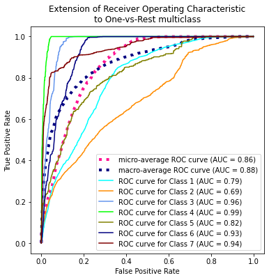
X_train_ADA_sc = scaler.fit_transform(X_train_ADA, y_train_ADA)
NaiveB = BernoulliNB()
start = time.process_time() # Inicia el contador de CPU time
NaiveB.fit(X_train_ADA_sc, y_train_ADA)
end = time.process_time() # Finaliza el contador de CPU time
print(f"CPU Time: {end - start} segundos")
print("Accuracy on training set: {:.3f}".format(NaiveB.score(X_train, y_train)))
metricas(NaiveB, True)
LAUC_curvas(NaiveB, True)
CPU Time: 2.546875 segundos
Accuracy on training set: 0.475
Precisión: 44.08%
Matriz de confusión:
[[19606 8488 37 0 7478 1016 5932]
[ 9996 21201 1415 168 16539 5287 1894]
[ 0 10 3165 1559 232 2155 0]
[ 0 0 52 435 0 39 0]
[ 5 184 241 0 1349 216 0]
[ 0 11 655 490 210 2123 0]
[ 370 180 15 0 108 0 3342]]
Reporte de clasificación:
precision recall f1-score support
1 0.65 0.46 0.54 42557
2 0.70 0.38 0.49 56500
3 0.57 0.44 0.50 7121
4 0.16 0.83 0.27 526
5 0.05 0.68 0.10 1995
6 0.20 0.61 0.30 3489
7 0.30 0.83 0.44 4015
accuracy 0.44 116203
macro avg 0.38 0.60 0.38 116203
weighted avg 0.63 0.44 0.49 116203
Micro-averaged One-vs-Rest ROC AUC score:
0.86
Macro-averaged One-vs-Rest ROC AUC score:
0.88
model = BernoulliNB()
start = time.process_time() # Inicia el contador de CPU time
# Código a medir
model.fit(X_train, y_train)
end = time.process_time() # Finaliza el contador de CPU time
print(f"CPU Time: {end - start} segundos")
CPU Time: 0.6875 segundos
model = GaussianNB()
start = time.process_time() # Inicia el contador de CPU time
# Código a medir
model.fit(X_train, y_train)
print("Accuracy on training set: {:.3f}".format(model.score(X_train, y_train)))
print("Accuracy on test set: {:.3f}".format(model.score(X_test, y_test)))
end = time.process_time() # Finaliza el contador de CPU time
print(f"CPU Time: {end - start} segundos")
Accuracy on training set: 0.457
Accuracy on test set: 0.455
CPU Time: 1.84375 segundos
print(model.score(X_train, y_train))
0.45703288877797116
metricas(model)
AUC_curvas(model)
Precisión: 45.50%
Matriz de confusión:
[[33148 1719 225 0 2309 50 5106]
[31505 8936 4106 32 11094 164 663]
[ 19 9 5656 1296 91 50 0]
[ 0 0 113 413 0 0 0]
[ 406 33 320 0 1221 15 0]
[ 96 3 2554 348 255 233 0]
[ 675 25 17 0 31 0 3267]]
Reporte de clasificación:
precision recall f1-score support
1 0.50 0.78 0.61 42557
2 0.83 0.16 0.27 56500
3 0.44 0.79 0.56 7121
4 0.20 0.79 0.32 526
5 0.08 0.61 0.14 1995
6 0.46 0.07 0.12 3489
7 0.36 0.81 0.50 4015
accuracy 0.46 116203
macro avg 0.41 0.57 0.36 116203
weighted avg 0.64 0.46 0.41 116203
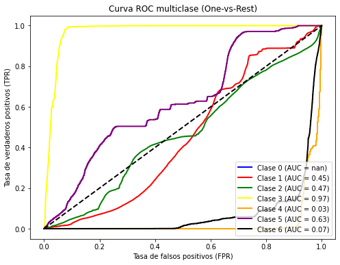
AUC promedio (macro): 0.88
decision_scores = model.decision_function(X_test)
# Calcular FPR, TPR y AUC para cada clase
n_classes = len(model.classes_)
fpr = dict()
tpr = dict()
roc_auc = dict()
for i in range(n_classes):
fpr[i], tpr[i], _ = roc_curve(y_test == i, decision_scores[:, i])
roc_auc[i] = auc(fpr[i], tpr[i])
print(f'AUC para la clase {i}: {roc_auc[i]:.2f}')
# Graficar las curvas ROC
plt.figure(figsize=(8, 6))
colors = ['blue', 'red', 'green']
for i, color in zip(range(n_classes), colors):
plt.plot(fpr[i], tpr[i], color=color, lw=2, label=f'Clase {i} (AUC = {roc_auc[i]:.2f})')
plt.plot([0, 1], [0, 1], color='black', linestyle='--', lw=2)
plt.xlabel('Tasa de falsos positivos (FPR)')
plt.ylabel('Tasa de verdaderos positivos (TPR)')
plt.title('Curva ROC multiclase (One-vs-Rest) usando decision_function')
plt.legend(loc='lower right')
plt.show()
Arbol de decision#
from sklearn.tree import DecisionTreeClassifier
tree = DecisionTreeClassifier(random_state = 42, criterion="entropy")
start = time.process_time() # Inicia el contador de CPU time
tree.fit(X_train_ADA, y_train_ADA)
end = time.process_time() # Finaliza el contador de CPU time
print("Accuracy on training set: {:.3f}".format(tree.score(X_train_ADA, y_train_ADA)))
print("Accuracy on test set: {:.3f}".format(tree.score(X_test, y_test)))
print(f"CPU Time: {end - start} segundos")
Accuracy on training set: 1.000
Accuracy on test set: 0.946
CPU Time: 27.296875 segundos
metricas(tree)
LAUC_curvas(tree)
Precisión: 94.59%
Matriz de confusión:
[[40206 2092 3 0 37 10 209]
[ 2207 53641 176 1 286 156 33]
[ 1 91 6759 45 17 208 0]
[ 0 0 53 453 0 20 0]
[ 17 167 15 0 1790 6 0]
[ 6 76 182 25 11 3189 0]
[ 119 21 0 0 1 0 3874]]
Reporte de clasificación:
precision recall f1-score support
1 0.94 0.94 0.94 42557
2 0.96 0.95 0.95 56500
3 0.94 0.95 0.94 7121
4 0.86 0.86 0.86 526
5 0.84 0.90 0.87 1995
6 0.89 0.91 0.90 3489
7 0.94 0.96 0.95 4015
accuracy 0.95 116203
macro avg 0.91 0.93 0.92 116203
weighted avg 0.95 0.95 0.95 116203
Micro-averaged One-vs-Rest ROC AUC score:
0.97
Macro-averaged One-vs-Rest ROC AUC score:
0.96
tree = DecisionTreeClassifier(random_state = 42)
param_grid = {
"max_depth": [10, 20, 30, None],
"criterion": ["gini", "entropy"],
"max_features": ["sqrt", "log2", None],
}
tree = DecisionTreeClassifier(random_state = 42, criterion = "entropy")
param_grid = {
"max_depth": [25, 30, 32, 35, 36, 37, 38, None],
}
# Configurar Grid Search
grid_search = GridSearchCV(
estimator=tree,
param_grid=param_grid,
scoring="accuracy", # Métrica de evaluación
cv=5, # Validación cruzada de 5 folds
n_jobs=-1, # Usar todos los núcleos de la CPU
)
start = time.process_time() # Inicia el contador de CPU time
# Ejecutar Grid Search
grid_search.fit(X_train, y_train)
end = time.process_time() # Finaliza el contador de CPU time
print(f"CPU Time: {end - start} segundos")
# Mejores hiperparámetros
print("Mejores hiperparámetros:", grid_search.best_params_)
# Evaluar el mejor modelo
best_model = grid_search.best_estimator_
metricas(best_model)
AUC_curvas(best_model)
CPU Time: 9.234375 segundos
Mejores hiperparámetros: {'max_depth': 36}
Precisión: 94.32%
Matriz de confusión:
[[40088 2256 1 0 36 6 170]
[ 2287 53730 119 0 236 91 37]
[ 1 121 6698 43 21 237 0]
[ 0 0 58 444 0 24 0]
[ 37 260 14 0 1674 9 1]
[ 7 94 232 24 7 3125 0]
[ 156 14 0 0 0 0 3845]]
Reporte de clasificación:
precision recall f1-score support
1 0.94 0.94 0.94 42557
2 0.95 0.95 0.95 56500
3 0.94 0.94 0.94 7121
4 0.87 0.84 0.86 526
5 0.85 0.84 0.84 1995
6 0.89 0.90 0.90 3489
7 0.95 0.96 0.95 4015
accuracy 0.94 116203
macro avg 0.91 0.91 0.91 116203
weighted avg 0.94 0.94 0.94 116203
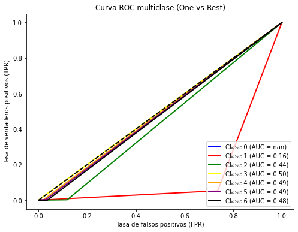
AUC promedio (macro): 0.95
# Configurar Grid Search
grid_search = GridSearchCV(
estimator=tree,
param_grid=param_grid,
scoring="accuracy", # Métrica de evaluación
cv=5, # Validación cruzada de 5 folds
n_jobs=-1, # Usar todos los núcleos de la CPU
)
start = time.process_time() # Inicia el contador de CPU time
# Ejecutar Grid Search
grid_search.fit(X_train, y_train)
end = time.process_time() # Finaliza el contador de CPU time
print(f"CPU Time: {end - start} segundos")
# Mejores hiperparámetros
print("Mejores hiperparámetros:", grid_search.best_params_)
# Evaluar el mejor modelo
best_model = grid_search.best_estimator_
y_pred = best_model.predict(X_test)
# Precisión del modelo
accuracy = accuracy_score(y_test, y_pred)
print(f"Precisión: {accuracy * 100:.2f}%")
# Matriz de confusión
print("Matriz de confusión:")
print(confusion_matrix(y_test, y_pred))
# Reporte de clasificación
print("Reporte de clasificación:")
print(classification_report(y_test, y_pred))
CPU Time: 5.859375 segundos
Mejores hiperparámetros: {'criterion': 'entropy', 'max_depth': None, 'max_features': None}
Precisión: 94.39%
Matriz de confusión:
[[40135 2203 1 0 33 7 178]
[ 2255 53760 122 0 237 92 34]
[ 1 120 6699 43 20 238 0]
[ 0 0 58 444 0 24 0]
[ 33 249 16 0 1687 9 1]
[ 7 96 232 24 6 3124 0]
[ 165 12 0 0 0 0 3838]]
Reporte de clasificación:
precision recall f1-score support
1 0.94 0.94 0.94 42557
2 0.95 0.95 0.95 56500
3 0.94 0.94 0.94 7121
4 0.87 0.84 0.86 526
5 0.85 0.85 0.85 1995
6 0.89 0.90 0.89 3489
7 0.95 0.96 0.95 4015
accuracy 0.94 116203
macro avg 0.91 0.91 0.91 116203
weighted avg 0.94 0.94 0.94 116203
# Configurar Grid Search
grid_search = GridSearchCV(
estimator=tree,
param_grid=param_grid,
scoring="f1", # Métrica de evaluación
cv=5, # Validación cruzada de 5 folds
n_jobs=-1, # Usar todos los núcleos de la CPU
)
start = time.process_time() # Inicia el contador de CPU time
# Ejecutar Grid Search
grid_search.fit(X_train, y_train)
end = time.process_time() # Finaliza el contador de CPU time
print(f"CPU Time: {end - start} segundos")
# Mejores hiperparámetros
print("Mejores hiperparámetros:", grid_search.best_params_)
# Evaluar el mejor modelo
best_model = grid_search.best_estimator_
metricas(best_model)
AUC_curvas(best_model)
CPU Time: 8.78125 segundos
Mejores hiperparámetros: {'max_depth': 25}
Precisión: 93.93%
Matriz de confusión:
[[39934 2417 1 0 31 5 169]
[ 2592 53439 115 0 221 99 34]
[ 1 118 6706 43 18 235 0]
[ 0 0 59 444 0 23 0]
[ 31 272 17 0 1665 9 1]
[ 5 91 232 23 5 3133 0]
[ 166 22 0 0 0 0 3827]]
Reporte de clasificación:
precision recall f1-score support
1 0.93 0.94 0.94 42557
2 0.95 0.95 0.95 56500
3 0.94 0.94 0.94 7121
4 0.87 0.84 0.86 526
5 0.86 0.83 0.85 1995
6 0.89 0.90 0.90 3489
7 0.95 0.95 0.95 4015
accuracy 0.94 116203
macro avg 0.91 0.91 0.91 116203
weighted avg 0.94 0.94 0.94 116203
AUC promedio (macro): 0.95
Ahora hagamos la validacion cruzada anidada usando class = ‘balanced’
tree = DecisionTreeClassifier(random_state = 42, class_weight="balanced")
param_grid = {
"max_depth": [10, 20, 30, None],
"criterion": ["gini", "entropy"],
"max_features": ["sqrt", "log2", None],
}
# Configurar Grid Search
grid_search = GridSearchCV(
estimator=tree,
param_grid=param_grid,
scoring="accuracy", # Métrica de evaluación
cv=5, # Validación cruzada de 5 folds
n_jobs=-1, # Usar todos los núcleos de la CPU
)
start = time.process_time() # Inicia el contador de CPU time
# Ejecutar Grid Search
grid_search.fit(X_train, y_train)
end = time.process_time() # Finaliza el contador de CPU time
print(f"CPU Time: {end - start} segundos")
# Mejores hiperparámetros
print("Mejores hiperparámetros:", grid_search.best_params_)
# Evaluar el mejor modelo
best_model_B = grid_search.best_estimator_
metricas(best_model_B)
AUC_curvas(best_model_B)
Precisión: 94.24%
Matriz de confusión:
[[40161 2188 1 0 35 4 168]
[ 2246 53743 144 0 227 115 25]
[ 2 141 6646 57 20 255 0]
[ 0 1 71 434 0 20 0]
[ 30 263 13 0 1679 10 0]
[ 10 138 306 16 10 3009 0]
[ 157 26 0 0 0 0 3832]]
Reporte de clasificación:
precision recall f1-score support
1 0.94 0.94 0.94 42557
2 0.95 0.95 0.95 56500
3 0.93 0.93 0.93 7121
4 0.86 0.83 0.84 526
5 0.85 0.84 0.85 1995
6 0.88 0.86 0.87 3489
7 0.95 0.95 0.95 4015
accuracy 0.94 116203
macro avg 0.91 0.90 0.91 116203
weighted avg 0.94 0.94 0.94 116203
AUC promedio (macro): 0.94
tree = DecisionTreeClassifier(random_state = 42, criterion="entropy")
start = time.process_time() # Inicia el contador de CPU time
tree.fit(X_train_ADA, y_train_ADA)
end = time.process_time() # Finaliza el contador de CPU time
print("Accuracy on training set: {:.3f}".format(tree.score(X_train_ADA, y_train_ADA)))
print("Accuracy on test set: {:.3f}".format(tree.score(X_test, y_test)))
print(f"CPU Time: {end - start} segundos")
Accuracy on training set: 1.000
Accuracy on test set: 0.942
CPU Time: 21.9375 segundos
tree = DecisionTreeClassifier(random_state = 42)
param_grid = {
"max_depth": [10, 20, 30, None],
"criterion": ["gini", "entropy"],
"max_features": ["sqrt", "log2", None],
}
# Configurar Grid Search
grid_search = GridSearchCV(
estimator=tree,
param_grid=param_grid,
scoring="accuracy", # Métrica de evaluación
cv=5, # Validación cruzada de 5 folds
n_jobs=-1, # Usar todos los núcleos de la CPU
)
start = time.process_time() # Inicia el contador de CPU time
# Ejecutar Grid Search
grid_search.fit(X_train_ADA, y_train_ADA)
end = time.process_time() # Finaliza el contador de CPU time
print(f"CPU Time: {end - start} segundos")
# Mejores hiperparámetros
print("Mejores hiperparámetros:", grid_search.best_params_)
# Evaluar el mejor modelo
best_model_ADA = grid_search.best_estimator_
metricas(best_model_ADA)
AUC_curvas(best_model_ADA)
CPU Time: 22.890625 segundos
Mejores hiperparámetros: {'criterion': 'entropy', 'max_depth': None, 'max_features': None}
Precisión: 94.59%
Matriz de confusión:
[[40206 2092 3 0 37 10 209]
[ 2207 53641 176 1 286 156 33]
[ 1 91 6759 45 17 208 0]
[ 0 0 53 453 0 20 0]
[ 17 167 15 0 1790 6 0]
[ 6 76 182 25 11 3189 0]
[ 119 21 0 0 1 0 3874]]
Reporte de clasificación:
precision recall f1-score support
1 0.94 0.94 0.94 42557
2 0.96 0.95 0.95 56500
3 0.94 0.95 0.94 7121
4 0.86 0.86 0.86 526
5 0.84 0.90 0.87 1995
6 0.89 0.91 0.90 3489
7 0.94 0.96 0.95 4015
accuracy 0.95 116203
macro avg 0.91 0.93 0.92 116203
weighted avg 0.95 0.95 0.95 116203
AUC promedio (macro): 0.96
tree = DecisionTreeClassifier(random_state = 42)
param_grid = {
"max_depth": [10, 20, 30, None],
"criterion": ["gini", "entropy"],
"max_features": ["sqrt", "log2", None],
}
# Configurar Grid Search
grid_search = GridSearchCV(
estimator=tree,
param_grid=param_grid,
scoring="accuracy", # Métrica de evaluación
cv=5, # Validación cruzada de 5 folds
n_jobs=-1, # Usar todos los núcleos de la CPU
)
start = time.process_time() # Inicia el contador de CPU time
# Ejecutar Grid Search
grid_search.fit(X_train_SM, y_train_SM)
end = time.process_time() # Finaliza el contador de CPU time
print(f"CPU Time: {end - start} segundos")
# Mejores hiperparámetros
print("Mejores hiperparámetros:", grid_search.best_params_)
# Evaluar el mejor modelo
best_model_SM = grid_search.best_estimator_
metricas(best_model_SM)
AUC_curvas(best_model_SM)
CPU Time: 21.90625 segundos
Mejores hiperparámetros: {'criterion': 'entropy', 'max_depth': None, 'max_features': None}
Precisión: 94.59%
Matriz de confusión:
[[40206 2092 3 0 37 10 209]
[ 2207 53641 176 1 286 156 33]
[ 1 91 6759 45 17 208 0]
[ 0 0 53 453 0 20 0]
[ 17 167 15 0 1790 6 0]
[ 6 76 182 25 11 3189 0]
[ 119 21 0 0 1 0 3874]]
Reporte de clasificación:
precision recall f1-score support
1 0.94 0.94 0.94 42557
2 0.96 0.95 0.95 56500
3 0.94 0.95 0.94 7121
4 0.86 0.86 0.86 526
5 0.84 0.90 0.87 1995
6 0.89 0.91 0.90 3489
7 0.94 0.96 0.95 4015
accuracy 0.95 116203
macro avg 0.91 0.93 0.92 116203
weighted avg 0.95 0.95 0.95 116203
AUC promedio (macro): 0.96
Ahora comparamos los mejores modelos de los grid search en cada metodo de balanceo
print("Accuracy on test set: {:.3f}".format(best_model.score(X_test, y_test)))
print("Accuracy on test set: {:.3f}".format(best_model_B.score(X_test, y_test)))
print("Accuracy on test set: {:.3f}".format(best_model_SM.score(X_test, y_test)))
print("Accuracy on test set: {:.3f}".format(best_model_ADA.score(X_test, y_test)))
AUC_curvas(best_model, draw = False)
AUC_curvas(best_model_B, draw = False)
AUC_curvas(best_model_SM, draw = False)
AUC_curvas(best_model_ADA, draw = False)
Accuracy on test set: 0.939
Accuracy on test set: 0.942
Accuracy on test set: 0.946
Accuracy on test set: 0.946
AUC promedio (macro): 0.95
AUC promedio (macro): 0.94
AUC promedio (macro): 0.96
AUC promedio (macro): 0.96
results = pd.DataFrame(grid_search.cv_results_)
results.head()
| mean_fit_time | std_fit_time | mean_score_time | std_score_time | param_criterion | param_max_depth | param_max_features | params | split0_test_score | split1_test_score | split2_test_score | split3_test_score | split4_test_score | mean_test_score | std_test_score | rank_test_score | |
|---|---|---|---|---|---|---|---|---|---|---|---|---|---|---|---|---|
| 0 | 8.868130 | 0.291849 | 0.304447 | 0.027691 | gini | 10 | sqrt | {'criterion': 'gini', 'max_depth': 10, 'max_fe... | 0.734900 | 0.630555 | 0.632953 | 0.728314 | 0.673782 | 0.680101 | 0.044822 | 22 |
| 1 | 7.817384 | 0.344732 | 0.279783 | 0.027987 | gini | 10 | log2 | {'criterion': 'gini', 'max_depth': 10, 'max_fe... | 0.610518 | 0.678013 | 0.683189 | 0.604902 | 0.628393 | 0.641003 | 0.033290 | 23 |
| 2 | 36.442931 | 0.532699 | 0.243282 | 0.009532 | gini | 10 | None | {'criterion': 'gini', 'max_depth': 10, 'max_fe... | 0.794776 | 0.799841 | 0.795998 | 0.795113 | 0.797661 | 0.796678 | 0.001871 | 20 |
| 3 | 12.871043 | 0.646687 | 0.390202 | 0.077225 | gini | 20 | sqrt | {'criterion': 'gini', 'max_depth': 20, 'max_fe... | 0.872680 | 0.897009 | 0.899673 | 0.898312 | 0.873275 | 0.888190 | 0.012451 | 16 |
| 4 | 11.124554 | 0.304768 | 0.363749 | 0.022682 | gini | 20 | log2 | {'criterion': 'gini', 'max_depth': 20, 'max_fe... | 0.847324 | 0.869962 | 0.886272 | 0.873463 | 0.884033 | 0.872211 | 0.013881 | 18 |
tree = DecisionTreeClassifier(random_state = 42, criterion = "entropy")
param_grid = {
"max_depth": [33, 34, 35, 36, 37, 38, 39, None],
}
# Configurar Grid Search
grid_search = GridSearchCV(
estimator=tree,
param_grid=param_grid,
scoring="accuracy", # Métrica de evaluación
cv=5, # Validación cruzada de 5 folds
n_jobs=-1, # Usar todos los núcleos de la CPU
)
start = time.process_time() # Inicia el contador de CPU time
# Ejecutar Grid Search
grid_search.fit(X_train_SM, y_train_SM)
end = time.process_time() # Finaliza el contador de CPU time
print(f"CPU Time: {end - start} segundos")
# Mejores hiperparámetros
print("Mejores hiperparámetros:", grid_search.best_params_)
# Evaluar el mejor modelo
new_best_model_SM = grid_search.best_estimator_
metricas(new_best_model_SM)
LAUC_curvas(new_best_model_SM)
CPU Time: 29.8125 segundos
Mejores hiperparámetros: {'max_depth': 37}
Precisión: 94.60%
Matriz de confusión:
[[40215 2083 3 0 36 10 210]
[ 2203 53649 176 1 279 157 35]
[ 1 89 6761 45 17 208 0]
[ 0 0 53 453 0 20 0]
[ 17 160 15 0 1795 8 0]
[ 6 76 182 25 11 3189 0]
[ 127 17 0 0 1 0 3870]]
Reporte de clasificación:
precision recall f1-score support
1 0.94 0.94 0.94 42557
2 0.96 0.95 0.95 56500
3 0.94 0.95 0.94 7121
4 0.86 0.86 0.86 526
5 0.84 0.90 0.87 1995
6 0.89 0.91 0.90 3489
7 0.94 0.96 0.95 4015
accuracy 0.95 116203
macro avg 0.91 0.93 0.92 116203
weighted avg 0.95 0.95 0.95 116203
Micro-averaged One-vs-Rest ROC AUC score:
0.97
Macro-averaged One-vs-Rest ROC AUC score:
0.96
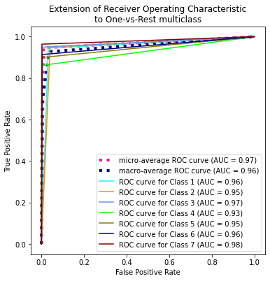
results = pd.DataFrame(grid_search.cv_results_)
results.head(10)
| mean_fit_time | std_fit_time | mean_score_time | std_score_time | param_max_depth | params | split0_test_score | split1_test_score | split2_test_score | split3_test_score | split4_test_score | mean_test_score | std_test_score | rank_test_score | |
|---|---|---|---|---|---|---|---|---|---|---|---|---|---|---|
| 0 | 53.493032 | 1.190527 | 0.323058 | 0.028055 | 33 | {'max_depth': 33} | 0.978587 | 0.981318 | 0.981340 | 0.982874 | 0.985834 | 0.981991 | 0.002367 | 4 |
| 1 | 52.801360 | 1.669581 | 0.347334 | 0.075298 | 34 | {'max_depth': 34} | 0.978540 | 0.981116 | 0.981456 | 0.982930 | 0.985717 | 0.981952 | 0.002355 | 8 |
| 2 | 50.693497 | 0.624721 | 0.354345 | 0.021535 | 35 | {'max_depth': 35} | 0.978565 | 0.981299 | 0.981431 | 0.982952 | 0.985787 | 0.982007 | 0.002360 | 2 |
| 3 | 51.945006 | 1.323274 | 0.347538 | 0.035002 | 36 | {'max_depth': 36} | 0.978565 | 0.981204 | 0.981365 | 0.982952 | 0.985765 | 0.981970 | 0.002363 | 7 |
| 4 | 52.807584 | 1.555373 | 0.346434 | 0.033375 | 37 | {'max_depth': 37} | 0.978565 | 0.981208 | 0.981400 | 0.982946 | 0.985998 | 0.982023 | 0.002436 | 1 |
| 5 | 53.970138 | 0.863335 | 0.347403 | 0.028228 | 38 | {'max_depth': 38} | 0.978565 | 0.981151 | 0.981400 | 0.982902 | 0.985925 | 0.981989 | 0.002412 | 5 |
| 6 | 53.666748 | 0.832008 | 0.334286 | 0.026380 | 39 | {'max_depth': 39} | 0.978565 | 0.981245 | 0.981400 | 0.982952 | 0.985831 | 0.981999 | 0.002379 | 3 |
| 7 | 52.309074 | 0.764969 | 0.241405 | 0.060311 | None | {'max_depth': None} | 0.978565 | 0.981245 | 0.981400 | 0.982820 | 0.985866 | 0.981979 | 0.002381 | 6 |
plt.figure(figsize=(12, 8))
plot_tree(
tree,
class_names=["1", "2", "3", "4", "5", "6", "7"],
feature_names=X.columns,
filled=True,
rounded=True,
impurity = False
)
plt.show()
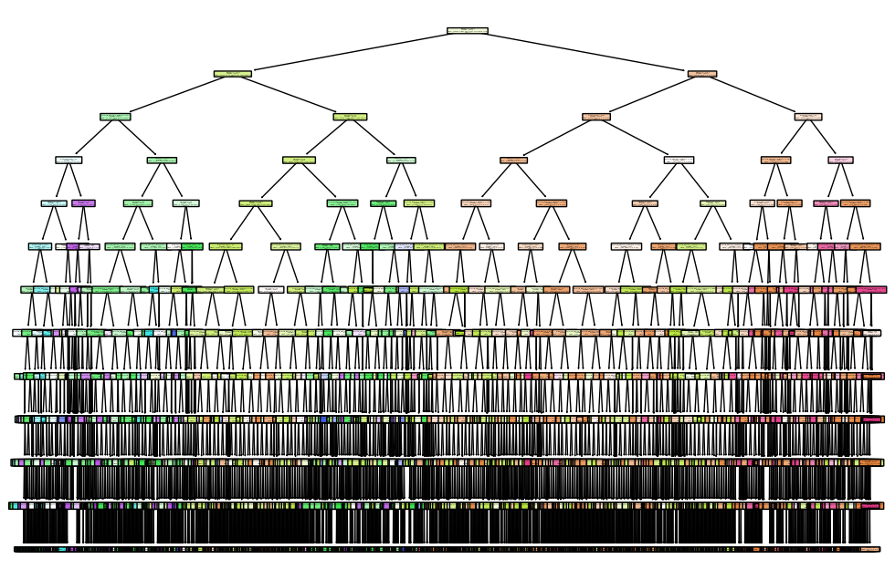
def plot_feature_importances_cancer(model):
n_features = 54
plt.barh(range(n_features), model.feature_importances_, align='center')
plt.yticks(np.arange(n_features), X.columns)
plt.xlabel("Feature importance")
plt.ylabel("Feature")
plot_feature_importances_cancer(tree)
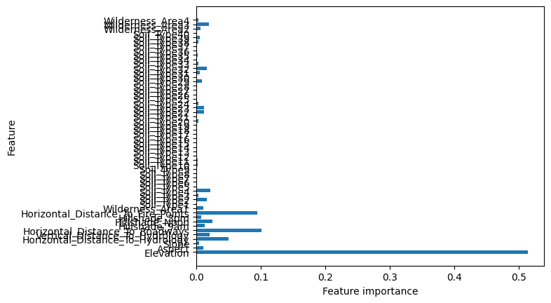
Random Forest#
Un Random Forest es una colección de árboles de decisión que trabajan juntos para hacer predicciones. En este artículo, explicaremos cómo funciona el algoritmo Random Forest y cómo utilizarlo. Comprender la intuición del algoritmo Random Forest
El algoritmo Random Forest es una potente técnica de aprendizaje de árboles en Machine Learning para hacer predicciones y luego hacemos votaciones de todos los árboles para hacer la predicción. Son ampliamente utilizados para tareas de clasificación y regresión.
Es un tipo de clasificador que utiliza muchos árboles de decisión para hacer predicciones.
Toma diferentes partes aleatorias del conjunto de datos para entrenar cada árbol y luego combina los resultados promediándolos. Este enfoque ayuda a mejorar la precisión de las predicciones. Random Forest se basa en el aprendizaje por conjuntos.
Imagine que pide consejo a un grupo de amigos sobre dónde ir de vacaciones. Cada amigo da su recomendación basándose en su perspectiva y preferencias únicas (árboles de decisión entrenados en diferentes subconjuntos de datos). La decisión final se toma teniendo en cuenta la opinión de la mayoría o promediando sus sugerencias (predicción de conjunto).
from sklearn.ensemble import RandomForestClassifier
# Entrenar modelo
rTree = RandomForestClassifier(random_state = 42, n_estimators = 100)
start = time.process_time() # Inicia el contador de CPU time
rTree.fit(X_train, y_train)
end = time.process_time() # Finaliza el contador de CPU time
print("Accuracy on training set: {:.3f}".format(rTree.score(X_train, y_train)))
print("Accuracy on test set: {:.3f}".format(rTree.score(X_test, y_test)))
print(f"CPU Time: {end - start} segundos")
# Evaluar
y_pred = rTree.predict(X_test)
print(classification_report(y_test, y_pred))
Accuracy on training set: 1.000
Accuracy on test set: 0.955
CPU Time: 108.640625 segundos
precision recall f1-score support
1 0.96 0.94 0.95 42557
2 0.95 0.97 0.96 56500
3 0.94 0.97 0.96 7121
4 0.92 0.85 0.89 526
5 0.94 0.77 0.85 1995
6 0.94 0.90 0.92 3489
7 0.97 0.95 0.96 4015
accuracy 0.96 116203
macro avg 0.95 0.91 0.93 116203
weighted avg 0.96 0.96 0.96 116203
plot_feature_importances_cancer(rTree)
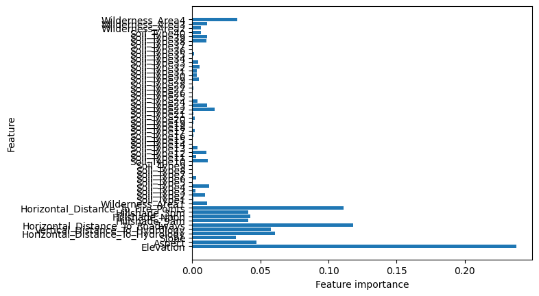
rTree = RandomForestClassifier(random_state = 42, criterion = "entropy")
param_grid = {
"n_estimators" : [50, 100],
"max_features" : ["log2", "sqrt", None],
"max_depth" : [35, None]
}
# Configurar Grid Search
grid_search = GridSearchCV(
estimator=rTree,
param_grid=param_grid,
scoring="accuracy", # Métrica de evaluación
cv=5, # Validación cruzada de 5 folds
n_jobs=-1, # Usar todos los núcleos de la CPU
)
start = time.process_time() # Inicia el contador de CPU time
# Ejecutar Grid Search
grid_search.fit(X_train, y_train)
end = time.process_time() # Finaliza el contador de CPU time
print(f"CPU Time: {end - start} segundos")
# Mejores hiperparámetros
print("Mejores hiperparámetros:", grid_search.best_params_)
# Evaluar el mejor modelo
best_model = grid_search.best_estimator_
print("Accuracy on training set: {:.3f}".format(best_model.score(X_train, y_train)))
metricas(best_model)
LAUC_curvas(best_model)
CPU Time: 393.0 segundos
Mejores hiperparámetros: {'max_depth': None, 'max_features': None, 'n_estimators': 100}
Accuracy on training set: 1.000
Precisión: 97.00%
Matriz de confusión:
[[41209 1244 1 0 17 0 86]
[ 1071 55201 65 0 97 42 24]
[ 1 68 6919 22 10 101 0]
[ 0 0 54 459 0 13 0]
[ 16 194 14 0 1762 9 0]
[ 2 57 126 16 6 3282 0]
[ 111 16 0 0 1 0 3887]]
Reporte de clasificación:
precision recall f1-score support
1 0.97 0.97 0.97 42557
2 0.97 0.98 0.97 56500
3 0.96 0.97 0.97 7121
4 0.92 0.87 0.90 526
5 0.93 0.88 0.91 1995
6 0.95 0.94 0.95 3489
7 0.97 0.97 0.97 4015
accuracy 0.97 116203
macro avg 0.96 0.94 0.95 116203
weighted avg 0.97 0.97 0.97 116203
Micro-averaged One-vs-Rest ROC AUC score:
1.00
Macro-averaged One-vs-Rest ROC AUC score:
1.00
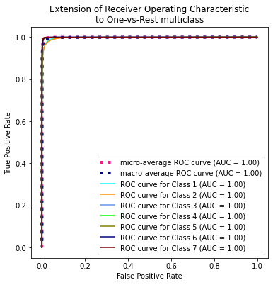
rTree = RandomForestClassifier(random_state = 42, criterion = "entropy", class_weight = "balanced")
param_grid = {
"n_estimators" : [50, 100],
"max_features" : ["log2", "sqrt", None],
"max_depth" : [35, None]
}
# Configurar Grid Search
grid_search = GridSearchCV(
estimator=rTree,
param_grid=param_grid,
scoring="accuracy", # Métrica de evaluación
cv=5, # Validación cruzada de 5 folds
n_jobs=-1, # Usar todos los núcleos de la CPU
)
start = time.process_time() # Inicia el contador de CPU time
# Ejecutar Grid Search
grid_search.fit(X_train, y_train)
end = time.process_time() # Finaliza el contador de CPU time
print(f"CPU Time: {end - start} segundos")
# Mejores hiperparámetros
print("Mejores hiperparámetros:", grid_search.best_params_)
# Evaluar el mejor modelo
best_model_B = grid_search.best_estimator_
metricas(best_model_B)
AUC_curvas(best_model_B)
CPU Time: 479.5 segundos
Mejores hiperparámetros: {'max_depth': 35, 'max_features': None, 'n_estimators': 100}
Precisión: 97.05%
Matriz de confusión:
[[41259 1188 1 0 19 2 88]
[ 995 55279 66 0 104 44 12]
[ 1 64 6913 27 8 108 0]
[ 0 0 60 453 0 13 0]
[ 16 207 15 0 1748 9 0]
[ 1 60 153 15 7 3253 0]
[ 119 23 0 0 1 0 3872]]
Reporte de clasificación:
precision recall f1-score support
1 0.97 0.97 0.97 42557
2 0.97 0.98 0.98 56500
3 0.96 0.97 0.96 7121
4 0.92 0.86 0.89 526
5 0.93 0.88 0.90 1995
6 0.95 0.93 0.94 3489
7 0.97 0.96 0.97 4015
accuracy 0.97 116203
macro avg 0.95 0.94 0.94 116203
weighted avg 0.97 0.97 0.97 116203
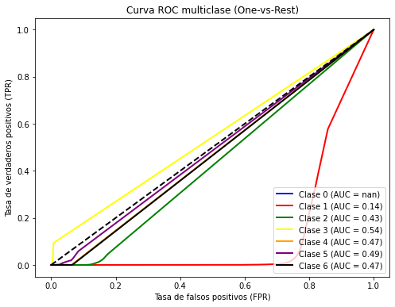
AUC promedio (macro): 1.00
print("Accuracy on training set: {:.3f}".format(best_model_B.score(X_train, y_train)))
Accuracy on training set: 1.000
Nota: Ignore la grafica de arriba
LAUC_curvas(best_model_B)
Micro-averaged One-vs-Rest ROC AUC score:
1.00
Macro-averaged One-vs-Rest ROC AUC score:
1.00
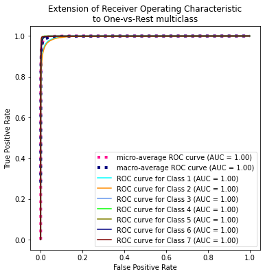
rTree = RandomForestClassifier(random_state = 42, criterion = "entropy")
param_grid = {
"n_estimators" : [50, 100],
"max_depth" : [35, None]
}
# Configurar Grid Search
grid_search = GridSearchCV(
estimator=rTree,
param_grid=param_grid,
scoring="accuracy", # Métrica de evaluación
cv=5, # Validación cruzada de 5 folds
n_jobs=-1, # Usar todos los núcleos de la CPU
)
start = time.process_time() # Inicia el contador de CPU time
# Ejecutar Grid Search
grid_search.fit(X_train_SM, y_train_SM)
end = time.process_time() # Finaliza el contador de CPU time
print(f"CPU Time: {end - start} segundos")
# Mejores hiperparámetros
print("Mejores hiperparámetros:", grid_search.best_params_)
# Evaluar el mejor modelo
best_model_SM = grid_search.best_estimator_
print("Accuracy on training set: {:.3f}".format(best_model_SM.score(X_train, y_train)))
metricas(best_model_SM)
LAUC_curvas(best_model_SM)
CPU Time: 316.78125 segundos
Mejores hiperparámetros: {'max_depth': None, 'n_estimators': 100}
Accuracy on training set: 1.000
Precisión: 96.23%
Matriz de confusión:
[[40694 1682 1 0 31 10 139]
[ 1279 54688 151 2 209 143 28]
[ 2 32 6924 29 9 125 0]
[ 0 0 47 464 0 15 0]
[ 12 142 13 0 1818 10 0]
[ 1 25 134 25 6 3298 0]
[ 74 7 0 0 1 0 3933]]
Reporte de clasificación:
precision recall f1-score support
1 0.97 0.96 0.96 42557
2 0.97 0.97 0.97 56500
3 0.95 0.97 0.96 7121
4 0.89 0.88 0.89 526
5 0.88 0.91 0.89 1995
6 0.92 0.95 0.93 3489
7 0.96 0.98 0.97 4015
accuracy 0.96 116203
macro avg 0.93 0.94 0.94 116203
weighted avg 0.96 0.96 0.96 116203
Micro-averaged One-vs-Rest ROC AUC score:
1.00
Macro-averaged One-vs-Rest ROC AUC score:
1.00
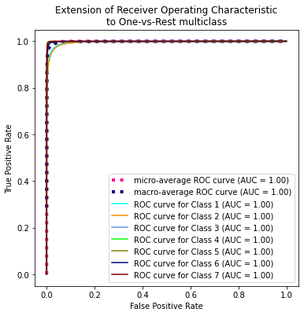
rTree = RandomForestClassifier(random_state = 42, criterion = "entropy")
param_grid = {
"n_estimators" : [50, 100],
"max_depth" : [35, None]
}
# Configurar Grid Search
grid_search = GridSearchCV(
estimator=rTree,
param_grid=param_grid,
scoring="accuracy", # Métrica de evaluación
cv=5, # Validación cruzada de 5 folds
n_jobs=-1, # Usar todos los núcleos de la CPU
)
start = time.process_time() # Inicia el contador de CPU time
# Ejecutar Grid Search
grid_search.fit(X_train_ADA, y_train_ADA)
end = time.process_time() # Finaliza el contador de CPU time
print(f"CPU Time: {end - start} segundos")
# Mejores hiperparámetros
print("Mejores hiperparámetros:", grid_search.best_params_)
# Evaluar el mejor modelo
best_model_ADA = grid_search.best_estimator_
print("Accuracy on training set: {:.3f}".format(best_model_ADA.score(X_train, y_train)))
metricas(best_model_ADA)
LAUC_curvas(best_model_ADA)
CPU Time: 262.859375 segundos
Mejores hiperparámetros: {'max_depth': None, 'n_estimators': 100}
Accuracy on training set: 1.000
Precisión: 96.23%
Matriz de confusión:
[[40694 1682 1 0 31 10 139]
[ 1279 54688 151 2 209 143 28]
[ 2 32 6924 29 9 125 0]
[ 0 0 47 464 0 15 0]
[ 12 142 13 0 1818 10 0]
[ 1 25 134 25 6 3298 0]
[ 74 7 0 0 1 0 3933]]
Reporte de clasificación:
precision recall f1-score support
1 0.97 0.96 0.96 42557
2 0.97 0.97 0.97 56500
3 0.95 0.97 0.96 7121
4 0.89 0.88 0.89 526
5 0.88 0.91 0.89 1995
6 0.92 0.95 0.93 3489
7 0.96 0.98 0.97 4015
accuracy 0.96 116203
macro avg 0.93 0.94 0.94 116203
weighted avg 0.96 0.96 0.96 116203
Micro-averaged One-vs-Rest ROC AUC score:
1.00
Macro-averaged One-vs-Rest ROC AUC score:
1.00
XGBoost#
from sklearn.ensemble import GradientBoostingClassifier
gbrt = GradientBoostingClassifier(random_state = 42)
gbrt.fit(X_train, y_train)
print("Accuracy on training set: {:.3f}".format(gbrt.score(X_train, y_train)))
print("Accuracy on test set: {:.3f}".format(gbrt.score(X_test, y_test)))
Accuracy on training set: 0.775
Accuracy on test set: 0.772
metricas(gbrt)
AUC_curvas(gbrt)
Precisión: 77.20%
Matriz de confusión:
[[31941 10120 13 0 17 18 448]
[ 8830 46695 490 0 109 344 32]
[ 0 675 5881 83 5 477 0]
[ 0 0 131 381 0 14 0]
[ 25 1470 49 0 445 6 0]
[ 0 786 1104 28 1 1570 0]
[ 1186 33 0 0 0 0 2796]]
Reporte de clasificación:
precision recall f1-score support
1 0.76 0.75 0.76 42557
2 0.78 0.83 0.80 56500
3 0.77 0.83 0.80 7121
4 0.77 0.72 0.75 526
5 0.77 0.22 0.35 1995
6 0.65 0.45 0.53 3489
7 0.85 0.70 0.77 4015
accuracy 0.77 116203
macro avg 0.76 0.64 0.68 116203
weighted avg 0.77 0.77 0.77 116203
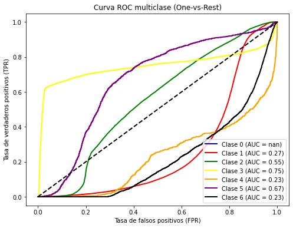
AUC promedio (macro): 0.96
SVM#
from sklearn.svm import SVC
from sklearn.svm import LinearSVC
Lsvm = LinearSVC(C = 1, random_state = 42, class_weight = "balanced")
Lsvm.fit(X_train_sc, y_train)
print("Accuracy on training set: {:.3f}".format(Lsvm.score(X_train_sc, y_train)))
print("Accuracy on test set: {:.3f}".format(Lsvm.score(X_test_sc, y_test)))
Accuracy on training set: 0.683
Accuracy on test set: 0.683
X_t, X_valid, y_t, y_valid = train_test_split(X_train_sc, y_train, random_state=42)
metricas(Lsvm, scaled = True)
LAUC_curvas(Lsvm, linScv = True)
Precisión: 68.25%
Matriz de confusión:
[[28644 9706 37 0 507 328 3335]
[11619 39629 1431 3 1723 1833 262]
[ 0 324 5148 169 54 1426 0]
[ 0 0 255 220 0 51 0]
[ 38 1042 185 0 646 84 0]
[ 0 367 1247 68 95 1712 0]
[ 665 20 17 0 0 0 3313]]
Reporte de clasificación:
precision recall f1-score support
1 0.70 0.67 0.69 42557
2 0.78 0.70 0.74 56500
3 0.62 0.72 0.67 7121
4 0.48 0.42 0.45 526
5 0.21 0.32 0.26 1995
6 0.32 0.49 0.38 3489
7 0.48 0.83 0.61 4015
accuracy 0.68 116203
macro avg 0.51 0.59 0.54 116203
weighted avg 0.70 0.68 0.69 116203
Micro-averaged One-vs-Rest ROC AUC score:
0.93
Macro-averaged One-vs-Rest ROC AUC score:
0.92
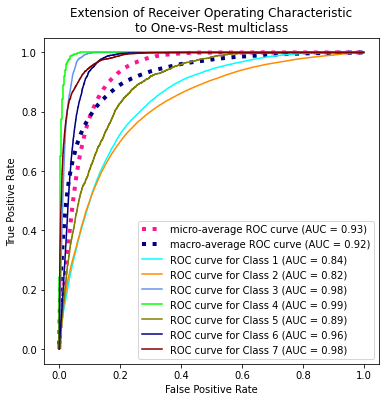
X_t_SM, X_valid_SM, y_t_SM, y_valid_SM = train_test_split(X_train_SM_sc, y_train, random_state=42)
best_score_SM = 0
for C in [0.001, 0.01, 0.1, 1, 10, 100]:
Lsvm = LinearSVC(C=C)
Lsvm.fit(X_t, y_t) # Ajuste del modelo SVC
score = Lsvm.score(X_valid, y_valid) # Score para selección de parámetros
if score > best_score_B:
best_score_B = score
best_parameters_B = {'C': C} # Almacenamos el mejor score y sus parámetros
print("Modelo terminado")
---------------------------------------------------------------------------
TypeError Traceback (most recent call last)
C:\Users\ALEJAN~1\AppData\Local\Temp/ipykernel_13328/3708953658.py in <module>
1 best_score_B = 0
2 for C in [0.001, 0.01, 0.1, 1, 10, 100]:
----> 3 Lsvm = LinearSVC(C=C, train_weight = "balanced")
4 Lsvm.fit(X_t, y_t) # Ajuste del modelo SVC
5 score = Lsvm.score(X_valid, y_valid) # Score para selección de parámetros
TypeError: __init__() got an unexpected keyword argument 'train_weight'
best_score = 0
for C in [0.001, 0.01, 0.1, 1, 10, 100]:
Lsvm = LinearSVC(C=C)
Lsvm.fit(X_t, y_t) # Ajuste del modelo SVC
score = Lsvm.score(X_valid, y_valid) # Score para selección de parámetros
if score > best_score:
best_score = score
best_parameters = {'C': C} # Almacenamos el mejor score y sus parámetros
print("Modelo terminado")
Modelo terminado
Modelo terminado
Modelo terminado
Modelo terminado
Modelo terminado
Modelo terminado
print(best_score)
print(best_parameters)
0.7146545269915578
{'C': 1}
Lsvm = LinearSVC
svm = SVC(random_state = 42)
param_grid = {
"gamma": [0.001, 0.01, 0.1, 1, 10, 100],
"C": [0.001, 0.01, 0.1, 1, 10, 100],
}
# Configurar Grid Search
grid_search = GridSearchCV(
estimator=tree,
param_grid=param_grid,
scoring="accuracy", # Métrica de evaluación
cv=5, # Validación cruzada de 5 folds
n_jobs=-1, # Usar todos los núcleos de la CPU
)
start = time.process_time() # Inicia el contador de CPU time
# Ejecutar Grid Search
grid_search.fit(X_train, y_train)
end = time.process_time() # Finaliza el contador de CPU time
print(f"CPU Time: {end - start} segundos")
# Mejores hiperparámetros
print("Mejores hiperparámetros:", grid_search.best_params_)
# Evaluar el mejor modelo
best_model = grid_search.best_estimator_
metricas(best_model)
AUC_curvas(best_model)
XgBoost#
import xgboost as xgb
print(xgb.__version__)
2.1.1